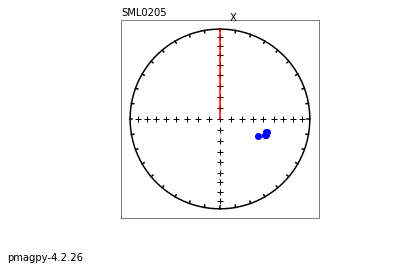
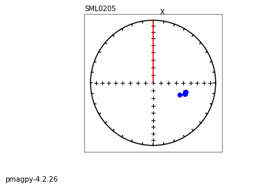

Working with the MagIC database using PmagPy
Contents
Working with the MagIC database using PmagPy#
The Magnetics Information Consortium (MagIC) maintains a database of published rock and paleomagnetic data: https://www.earthref.org/MagIC
Many PmagPy scripts are designed to work with data in the MagIC format. This notebook uses Data Model 3.0: https://www.earthref.org/MagIC/data-models/3.0
Overview of MagIC#
The Magnetics Information Consortium (MagIC), hosted at http://earthref.org/MagIC is a database that serves as a Findable, Accessible, Interoperable, Reusable (FAIR) archive for paleomagnetic and rock magnetic data. Its data model is fully described here: https://www2.earthref.org/MagIC/data-models/3.0. Each contribution is associated with a publication via the DOI. There are nine data tables:
contribution: metadata of the associated publication.
locations: metadata for locations, which are groups of sites (e.g., stratigraphic section, region, etc.)
sites: metadata and derived data at the site level (units with a common expectation)
samples: metadata and derived data at the sample level.
specimens: metadata and derived data at the specimen level.
criteria: criteria by which data are deemed acceptable
ages: ages and metadata for sites/samples/specimens
images: associated images and plots.
MagIC .txt files all have the delimiter (tab) and the type of table in the first line and the column headers in the second line:
See the first few lines of a samples.txt table by clicking on and running the following cell:
with open('data_files/3_0/McMurdo/samples.txt') as f:
for line in f.readlines()[:3]:
print(line, end="")
tab samples
azimuth azimuth_dec_correction citations description dip geologic_classes geologic_types lat lithologies lon method_codes orientation_quality sample site
260 0 This study Archived samples from 1965, 66 expeditions. -57 Extrusive:Igneous Lava Flow -77.85 Trachyte 166.64 SO-SIGHT:FS-FD g mc01a mc01
Guide to PmagPy#
The notebook is one of a series of notebooks that demonstrate the functionality of PmagPy. The other notebooks are:
PmagPy_introduction.ipynb This notebook introduces PmagPy and lists the functions that are demonstrated in the other notebooks.
PmagPy_calculations.ipynb This notebook demonstrates many of the PmagPy calculation functions such as those that rotate directions, return statistical parameters, and simulate data from specified distributions.
PmagPy_plots_analysis.ipynb This notebook demonstrates PmagPy functions that can be used to visualize data as well as those that conduct statistical tests that have associated visualizations.
Customizing this notebook#
If you want to make changes to this notebook, you should make a copy (see File menu). Otherwise each time you update PmagPy, your changes will be overwritten.
Get started#
To use the functions in this notebook, we have to import the PmagPy modules pmagplotlib, pmag and ipmag and some other handy functions for use in the notebook. This is done in the following code block which must be executed before running any other code block. To execute, click on the code block and then click on the “Run” button in the menu.
In order to access the example data, this notebook is meant to be run in the PmagPy-data directory (PmagPy directory for developers).
Try it! Run the code block below (click on the cell and then click ‘Run’):
import pmagpy.pmag as pmag
import pmagpy.pmagplotlib as pmagplotlib
import pmagpy.ipmag as ipmag
import pmagpy.contribution_builder as cb
from pmagpy import convert_2_magic as convert
import matplotlib.pyplot as plt # our plotting buddy
import numpy as np # the fabulous NumPy package
import pandas as pd # and of course Pandas
# test if Basemap and/or cartopy is installed
has_basemap, Basemap = pmag.import_basemap()
has_cartopy, Cartopy = pmag.import_cartopy()
# test if xlwt is installed (allows you to export to excel)
try:
import xlwt
has_xlwt = True
except ImportError:
has_xlwt = False
# This allows you to make matplotlib plots inside the notebook.
%matplotlib inline
from IPython.display import Image
import os # import some operating system utilities
import zipfile as zf # import the zipfile module for unpacking zip files
import shutil as shutil # another useful module with system utilities
import requests, pandas, getpass
api = 'https://api.earthref.org/v1/MagIC/{}'
try:
import wget
except:
!pip install wget
print('All modules imported!')
All modules imported!
Table of contents#
Functions in PmagPy_MagIC.ipynb
reading MagIC files : reading in MagIC formatted files
writing MagIC files : outputing MagIC formatted files
combine_magic : combines two MagIC formatted files of same type
convert_ages : convert ages in downloaded MagIC file to Ma
grab_magic_key : prints out a single column from a MagIC format file
magic_select : selects data from MagIC format file given conditions (e.g., method_codes contain string)
sites_extract : makes excel or latex files from sites.txt for publications
criteria_extract : makes excel or latex files from criteria.txt for publications
specimens_extract : makes excel or latex files from specimens.txt for publications
contributions work with data model 3.0 MagIC contributions
download_magic : how to download and unpack a contribution text file from the MagIC website
upload_magic : prepares a directory with a MagIC contribution for uploading to MagIC
cb.add_sites_to_meas_table : completes a measurements data frame with the information required for plotting by site.
cb.get_intensity_col : finds the first non-zero type of intensity data in a measurements dataframe.
Interacting with the MagIC database: downloads and uploads MagIC contributions.
conversion scripts : convert many laboratory measurement formats to the MagIC data model 3 format
_2g_asc_magic : converts 2G ascii files to MagIC
_2g_bin_magic : converts 2G binary files to MagIC
agm_magic : converts Princeton Measurements alternating gradient force magnetization (AGM) files to MagIC.
bgc_magic : convert Berkeley Geochronology Center files to MagIC.
cit_magic : convert Cal Tech format files to MagIC.
generic_magic : converts generic files to MagIC.
huji_magic : converts Hebrew University, Jerusalem, Israel files to MagIC.
huji_sample_magic : converts HUJI files to a MagIC format.
iodp_dscr_lore : converts IODP discrete measurement files to MagIC
iodp_jr6_lore : converts IODP JR6 measurement files to MagIC
iodp_samples_csv : converts IODP samples file to MagIC
iodp_srm_lore : converts IODP archive half measurement files to MagIC
jr6_jr6_magic : converts the AGICO JR6 spinner .jr6 files to MagIC
jr6_txt_magic : converts the AGICO JR6 .txt files to MagIC
k15_magic : converts 15 measurement anisotropy of magnetic susceptibility files to MagIC.
kly4s_magic : converts SIO KLY4S formatted files to MagIC.
ldeo_magic : converts Lamont-Doherty files to MagIC.
livdb_magic : converts Liverpool files to MagIC.
mst_magic : converts Curie Temperature experimental data to MagIC
sio_magic : converts Scripps Institution of Oceanography data files to MagIC
sufar4_magic : converts AGICO SUFAR program (ver.1.2.) ascii files to MagIC
tdt_magic : converts Thellier Tool files to MagIC
utrecht_magic : converts Fort Hoofddijk, Utrecht University Robot files to MagIC
orientation_magic : converts an “orient.txt” formatted file with field notebook information into MagIC formatted files
azdip_magic : converts an “azdip” formatted file to a samples.txt file format
other handy scripts
chartmaker : script for making chart to guide IZZI lab experiment
magic_read#
MagIC formatted data files can be imported to a notebook in one of two ways: a
importing to a Pandas DataFrame using the Pandas pd.read_csv() function
importing to a list of dictionaries using the pmag.magic_read() function.
In this notebook, we generally read MagIC tables into a Pandas Dataframe with a command like:
meas_df = pd.read_csv('MEASUREMENTS_FILE_PATH',sep='\t',header=1)
These data can then be manipulated with Pandas functions (https://pandas.pydata.org/)
meas_df=pd.read_csv('data_files/3_0/McMurdo/measurements.txt',sep='\t',header=1)
meas_df.head()
| experiment | specimen | measurement | dir_csd | dir_dec | dir_inc | hyst_charging_mode | hyst_loop | hyst_sweep_rate | treat_ac_field | ... | timestamp | magn_r2_det | magn_x_sigma | magn_xyz_sigma | magn_y_sigma | magn_z_sigma | susc_chi_mass | susc_chi_qdr_mass | susc_chi_qdr_volume | susc_chi_volume | |
|---|---|---|---|---|---|---|---|---|---|---|---|---|---|---|---|---|---|---|---|---|---|
| 0 | mc01f-LP-DIR-AF | mc01f | mc01f-LP-DIR-AF1 | 0.4 | 171.9 | 31.8 | NaN | NaN | NaN | 0.0000 | ... | NaN | NaN | NaN | NaN | NaN | NaN | NaN | NaN | NaN | NaN |
| 1 | mc01f-LP-DIR-AF | mc01f | mc01f-LP-DIR-AF2 | 0.4 | 172.0 | 30.1 | NaN | NaN | NaN | 0.0050 | ... | NaN | NaN | NaN | NaN | NaN | NaN | NaN | NaN | NaN | NaN |
| 2 | mc01f-LP-DIR-AF | mc01f | mc01f-LP-DIR-AF3 | 0.5 | 172.3 | 30.4 | NaN | NaN | NaN | 0.0075 | ... | NaN | NaN | NaN | NaN | NaN | NaN | NaN | NaN | NaN | NaN |
| 3 | mc01f-LP-DIR-AF | mc01f | mc01f-LP-DIR-AF4 | 0.4 | 172.1 | 30.4 | NaN | NaN | NaN | 0.0100 | ... | NaN | NaN | NaN | NaN | NaN | NaN | NaN | NaN | NaN | NaN |
| 4 | mc01f-LP-DIR-AF | mc01f | mc01f-LP-DIR-AF5 | 0.5 | 171.9 | 30.8 | NaN | NaN | NaN | 0.0125 | ... | NaN | NaN | NaN | NaN | NaN | NaN | NaN | NaN | NaN | NaN |
5 rows × 60 columns
Alternatively, the user may wish to use a list of dictionaries compatible with many pmag functions. For that, use the pmag.magic_read() function:
help (pmag.magic_read)
Help on function magic_read in module pmagpy.pmag:
magic_read(infile, data=None, return_keys=False, verbose=False)
Reads a Magic template file, returns data in a list of dictionaries.
Parameters
___________
Required:
infile : the MagIC formatted tab delimited data file
first line contains 'tab' in the first column and the data file type in the second (e.g., measurements, specimen, sample, etc.)
Optional:
data : data read in with, e.g., file.readlines()
Returns
_______
list of dictionaries, file type
meas_dict,file_type=pmag.magic_read('data_files/3_0/McMurdo/measurements.txt')
print (file_type)
print (meas_dict[0])
measurements
{'experiment': 'mc01f-LP-DIR-AF', 'specimen': 'mc01f', 'measurement': 'mc01f-LP-DIR-AF1', 'dir_csd': '0.4', 'dir_dec': '171.9', 'dir_inc': '31.8', 'hyst_charging_mode': '', 'hyst_loop': '', 'hyst_sweep_rate': '', 'treat_ac_field': '0.0', 'treat_ac_field_dc_off': '', 'treat_ac_field_dc_on': '', 'treat_ac_field_decay_rate': '', 'treat_dc_field': '0.0', 'treat_dc_field_ac_off': '', 'treat_dc_field_ac_on': '', 'treat_dc_field_decay_rate': '', 'treat_dc_field_phi': '0.0', 'treat_dc_field_theta': '0.0', 'treat_mw_energy': '', 'treat_mw_integral': '', 'treat_mw_power': '', 'treat_mw_time': '', 'treat_step_num': '1', 'treat_temp': '273', 'treat_temp_dc_off': '', 'treat_temp_dc_on': '', 'treat_temp_decay_rate': '', 'magn_mass': '', 'magn_moment': '2.7699999999999996e-05', 'magn_volume': '', 'citations': 'This study', 'instrument_codes': '', 'method_codes': 'LT-NO:LP-DIR-AF', 'quality': 'g', 'standard': 'u', 'meas_field_ac': '', 'meas_field_dc': '', 'meas_freq': '', 'meas_n_orient': '', 'meas_orient_phi': '', 'meas_orient_theta': '', 'meas_pos_x': '', 'meas_pos_y': '', 'meas_pos_z': '', 'meas_temp': '273', 'meas_temp_change': '', 'analysts': 'Jason Steindorf', 'description': '', 'software_packages': 'pmagpy-1.65b', 'timestamp': '', 'magn_r2_det': '', 'magn_x_sigma': '', 'magn_xyz_sigma': '', 'magn_y_sigma': '', 'magn_z_sigma': '', 'susc_chi_mass': '', 'susc_chi_qdr_mass': '', 'susc_chi_qdr_volume': '', 'susc_chi_volume': ''}
pmag.magic_write#
to write a dataframe out as a MagIC table, just set dataframe=True
help(pmag.magic_write)
Help on function magic_write in module pmagpy.pmag:
magic_write(ofile, Recs, file_type, dataframe=False)
Parameters
_________
ofile : path to output file
Recs : list of dictionaries in MagIC format
file_type : MagIC table type (e.g., specimens)
dataframe : boolean
if True, Recs is a pandas dataframe which must be converted
to a list of dictionaries
Return :
[True,False] : True if successful
ofile : same as input
Effects :
writes a MagIC formatted file from Recs
pmag.magic_write('my_measurements.txt', meas_df, 'measurements',dataframe=True)
25470 records written to file my_measurements.txt
(True, 'my_measurements.txt')
for a list of dictionaries, use this syntax
pmag.magic_write('my_measurements.txt', meas_dict, 'measurements')
25470 records written to file my_measurements.txt
(True, 'my_measurements.txt')
combine_magic#
[MagIC Database] [command line version]
MagIC tables have many columns only some of which are used in a particular instance. So combining files of the same type must be done carefully to ensure that the right data come under the right headings. The program combine_magic can be used to combine any number of MagIC files from a given type.
It reads in MagIC formatted files of a common type (e.g., sites.txt) and combines them into a single file, taking care that all the columns are preserved. For example, if there are both AF and thermal data from a study and we created a measurements.txt formatted file for each, we could use combine_magic.py on the command line to combine them together into a single measurements.txt file. In a notebook, we use ipmag.combine_magic().
help(ipmag.combine_magic)
Help on function combine_magic in module pmagpy.ipmag:
combine_magic(filenames, outfile='measurements.txt', data_model=3, magic_table='measurements', dir_path='.', input_dir_path='')
Takes a list of magic-formatted files, concatenates them, and creates a
single file. Returns output filename if the operation was successful.
Parameters
-----------
filenames : list of MagIC formatted files
outfile : name of output file [e.g., measurements.txt]
data_model : data model number (2.5 or 3), default 3
magic_table : name of magic table, default 'measurements'
dir_path : str
output directory, default "."
input_dir_path : str
input file directory (if different from dir_path), default ""
Returns
----------
outfile name if success, False if failure
Here we make a list of names of two MagIC formatted measurements.txt files and use ipmag.combine_magic() to put them together.
filenames=['data_files/combine_magic/af_measurements.txt','../combine_magic/therm_measurements.txt']
outfile='data_files/combine_magic/measurements.txt'
ipmag.combine_magic(filenames,outfile)
-I- Using online data model
-I- Getting method codes from earthref.org
-I- Importing controlled vocabularies from https://earthref.org
-I- overwriting /Users/nebula/Python/PmagPy/data_files/combine_magic/measurements.txt
-I- 14 records written to measurements file
'/Users/nebula/Python/PmagPy/data_files/combine_magic/measurements.txt'
convert_ages#
Files downloaded from the MagIC search interface have ages that are in the original units, but what is often desired is for them to be in a single unit. For example, if we searched the MagIC database for all absolute paleointensity data (records with method codes of ‘LP-PI-TRM’) from the last five million years, the data sets have a variety of age units. We can use pmag.convert_ages() to convert them all to millions of years.
First we follow the instructions for unpacking downloaded files in download_magic.
ipmag.download_magic('magic_downloaded_rows.txt',dir_path='data_files/convert_ages/',
input_dir_path='data_files/convert_ages/')
working on: 'contribution'
1 records written to file /Users/nebula/Python/PmagPy/data_files/convert_ages/contribution.txt
contribution data put in /Users/nebula/Python/PmagPy/data_files/convert_ages/contribution.txt
working on: 'sites'
14317 records written to file /Users/nebula/Python/PmagPy/data_files/convert_ages/sites.txt
sites data put in /Users/nebula/Python/PmagPy/data_files/convert_ages/sites.txt
True
After some minimal filtering using Pandas, we can convert a DataFrame to a list of dictionaries required by most PmagPy functions and use pmag.convert_ages() to convert all the ages. The converted list of dictionaries can then be turned back into a Pandas DataFrame and either plotted or filtered further as desired.
In this example, we filter for data older than the Brunhes (0.78 Ma) and younger than 5 Ma, then plot them against latitude. We can also use vdm_b to plot the intensities expected from the present dipole moment (~80 ZAm\(^2\)).
help(pmag.convert_ages)
Help on function convert_ages in module pmagpy.pmag:
convert_ages(Recs, data_model=3)
converts ages to Ma
Parameters
_________
Recs : list of dictionaries in data model by data_model
data_model : MagIC data model (default is 3)
# read in the sites.txt file as a dataframe
site_df=pd.read_csv('data_files/convert_ages/sites.txt',sep='\t',header=1)
# get rid aof any records without intensity data or latitude
site_df=site_df.dropna(subset=['int_abs','lat'])
# Pick out the sites with 'age' filled in
site_df_age=site_df.dropna(subset=['age'])
# pick out those with age_low and age_high filled in
site_df_lowhigh=site_df.dropna(subset=['age_low','age_high'])
# concatenate the two
site_all_ages=pd.concat([site_df_age,site_df_lowhigh])
# get rid of duplicates (records with age, age_high AND age_low)
site_all_ages.drop_duplicates(inplace=True)
# Pandas reads in blanks as NaN, which pmag.convert_ages hates
# this replaces all the NaNs with blanks
site_all_ages.fillna('',inplace=True)
# converts to a list of dictionaries
sites=site_all_ages.to_dict('records')
# converts the ages to Ma
converted_df=pmag.convert_ages(sites)
# turn it back into a DataFrame
site_ages=pd.DataFrame(converted_df)
# filter away
site_ages=site_ages[site_ages.age.astype(float) <= 5]
site_ages=site_ages[site_ages.age.astype(float) >=0.05]
Let’s plot them up and see what we get.
plt.plot(site_ages.lat,site_ages.int_abs*1e6,'bo')
# put on the expected values for the present dipole moment (~80 ZAm^2)
lats=np.arange(-80,70,1)
vdms=80e21*np.ones(len(lats))
bs=pmag.vdm_b(vdms,lats)*1e6
plt.plot(lats,bs,'r-')
plt.xlabel('Latitude')
plt.ylabel('Intensity ($\mu$T)')
plt.show()
That is pretty awful agreement. Someday we need to figure out what is wrong with the data or our GAD hypothesis.
grab_magic_key#
[MagIC Database] [command line version]
Sometimes you want to read in a MagIC file and print out the desired key. Pandas makes this easy! In this example, we will print out latitudes for each site record.
sites=pd.read_csv('data_files/download_magic/sites.txt',sep='\t',header=1)
print (sites.lat)
0 33.067800
1 33.067460
2 33.044630
3 33.043960
4 33.044170
...
86 32.848164
87 32.848164
88 32.848164
89 32.848164
90 32.848164
Name: lat, Length: 91, dtype: float64
magic_select#
[MagIC Database] [command line version]
This example demonstrates how to select MagIC records that meet a certain criterion, like having a particular method code.
Note: to output into a MagIC formatted file, we can change the DataFrame to a list of dictionaries (with df.to_dict(“records”)) and use pmag.magic_write()..
help(pmag.magic_write)
Help on function magic_write in module pmagpy.pmag:
magic_write(ofile, Recs, file_type)
Parameters
_________
ofile : path to output file
Recs : list of dictionaries in MagIC format
file_type : MagIC table type (e.g., specimens)
Return :
[True,False] : True if successful
ofile : same as input
Effects :
writes a MagIC formatted file from Recs
# read in the data file
spec_df=pd.read_csv('data_files/magic_select/specimens.txt',sep='\t',header=1)
# pick out the desired data
method_key='method_codes' # change to method_codes for data model 3
spec_df=spec_df[spec_df.method_codes.str.contains('LP-DIR-AF')]
specs=spec_df.to_dict('records') # export to list of dictionaries
success,ofile=pmag.magic_write('data_files/magic_select/AF_specimens.txt',specs,'pmag_specimens') # specimens for data model 3.0
76 records written to file data_files/magic_select/AF_specimens.txt
sites_extract#
It is frequently desirable to format tables for publications from the MagIC formatted files. This example is for the sites.txt formatted file. It will create a site information table with the location and age information, and directions and/or intenisty summary tables. The function to call is ipmag.sites_extract().
help(ipmag.sites_extract)
Help on function sites_extract in module pmagpy.ipmag:
sites_extract(site_file='sites.txt', directions_file='directions.xls', intensity_file='intensity.xls', info_file='site_info.xls', output_dir_path='.', input_dir_path='', latex=False)
Extracts directional and/or intensity data from a MagIC 3.0 format sites.txt file.
Default output format is an Excel file.
Optional latex format longtable file which can be uploaded to Overleaf or
typeset with latex on your own computer.
Parameters
___________
site_file : str
input file name
directions_file : str
output file name for directional data
intensity_file : str
output file name for intensity data
site_info : str
output file name for site information (lat, lon, location, age....)
output_dir_path : str
path for output files
input_dir_path : str
path for intput file if different from output_dir_path (default is same)
latex : boolean
if True, output file should be latex formatted table with a .tex ending
Return :
[True,False], error type : True if successful
Effects :
writes Excel or LaTeX formatted tables for use in publications
Here is an example for how to create Latex files:
#latex way:
ipmag.sites_extract(directions_file='directions.tex',intensity_file='intensities.tex',
output_dir_path='data_files/3_0/McMurdo',info_file='site_info.tex',latex=True)
(True,
['/Users/nebula/Python/PmagPy/data_files/3_0/McMurdo/site_info.tex',
'/Users/nebula/Python/PmagPy/data_files/3_0/McMurdo/intensities.tex',
'/Users/nebula/Python/PmagPy/data_files/3_0/McMurdo/directions.tex'])
And here is how to create Excel files:
#xls way:
if has_xlwt:
print(ipmag.sites_extract(output_dir_path='data_files/3_0/McMurdo'))
(True, ['/Users/nebula/Python/PmagPy/data_files/3_0/McMurdo/site_info.xls', '/Users/nebula/Python/PmagPy/data_files/3_0/McMurdo/intensity.xls', '/Users/nebula/Python/PmagPy/data_files/3_0/McMurdo/directions.xls'])
criteria_extract#
This example is for the criteria.txt formatted file. It will create a criteria table suitable for publication in either LaTex or .csv format. The function to call is ipmag.criteria_extract().
help(ipmag.criteria_extract)
Help on function criteria_extract in module pmagpy.ipmag:
criteria_extract(crit_file='criteria.txt', output_file='criteria.xls', output_dir_path='.', input_dir_path='', latex=False)
Extracts criteria from a MagIC 3.0 format criteria.txt file.
Default output format is an Excel file.
typeset with latex on your own computer.
Parameters
___________
crit_file : str, default "criteria.txt"
input file name
output_file : str, default "criteria.xls"
output file name
output_dir_path : str, default "."
output file directory
input_dir_path : str, default ""
path for intput file if different from output_dir_path (default is same)
latex : boolean, default False
if True, output file should be latex formatted table with a .tex ending
Return :
[True,False], data table error type : True if successful
Effects :
writes xls or latex formatted tables for use in publications
# latex way:
ipmag.criteria_extract(output_dir_path='data_files/3_0/Megiddo',
latex=True,output_file='criteria.tex',)
(True, ['/Users/nebula/Python/PmagPy/data_files/3_0/Megiddo/criteria.tex'])
#xls way:
if has_xlwt:
print(ipmag.criteria_extract(output_dir_path='data_files/3_0/Megiddo'))
(True, ['/Users/nebula/Python/PmagPy/data_files/3_0/Megiddo/criteria.xls'])
specimens_extract#
Similarly, it is useful to make tables for specimen (intensity) data to include in publications. Here are examples using a specimens.txt file.
help(ipmag.specimens_extract)
Help on function specimens_extract in module pmagpy.ipmag:
specimens_extract(spec_file='specimens.txt', output_file='specimens.xls', landscape=False, longtable=False, output_dir_path='.', input_dir_path='', latex=False)
Extracts specimen results from a MagIC 3.0 format specimens.txt file.
Default output format is an Excel file.
typeset with latex on your own computer.
Parameters
___________
spec_file : str, default "specimens.txt"
input file name
output_file : str, default "specimens.xls"
output file name
landscape : boolean, default False
if True output latex landscape table
longtable : boolean
if True output latex longtable
output_dir_path : str, default "."
output file directory
input_dir_path : str, default ""
path for intput file if different from output_dir_path (default is same)
latex : boolean, default False
if True, output file should be latex formatted table with a .tex ending
Return :
[True,False], data table error type : True if successful
Effects :
writes xls or latex formatted tables for use in publications
#latex way:
ipmag.specimens_extract(output_file='specimens.tex',landscape=True,
output_dir_path='data_files/3_0/Megiddo',latex=True,longtable=True)
(True, ['/Users/nebula/Python/PmagPy/data_files/3_0/Megiddo/specimens.tex'])
#xls way:
if has_xlwt:
print(ipmag.specimens_extract(output_dir_path='data_files/3_0/Megiddo'))
(True, ['/Users/nebula/Python/PmagPy/data_files/3_0/Megiddo/specimens.xls'])
Contributions#
Here are some useful functions for working with MagIC data model 3.0 contributions.
download_magic#
[MagIC Database] [command line version]
Working with a public contribution:#
The programs ipmag.download_magic_from_id() and ipmag.download_magic_from_doi() download files from the MagIC website and ipmag.download_magic( ) unpacks the downloaded .txt file into individual text files. This program has an option to also separate the contribution into separate folders for each location.
As an example, download the cotribution with the DOI of 10.1029/2019GC008479. Make a folder into which you should put the downloaded txt file (called “magic_contribution.txt”) into it. Then use ipmag.download_magic to unpack the .txt file (magic_contribution.txt).
help(ipmag.download_magic_from_doi)
Help on function download_magic_from_doi in module pmagpy.ipmag:
download_magic_from_doi(doi)
Download a public contribution matching the provided DOI
from earthref.org/MagIC.
Parameters
----------
doi : str
DOI for a MagIC
Returns
---------
result : bool
message : str
Error message if download didn't succeed
help(ipmag.download_magic)
Help on function download_magic in module pmagpy.ipmag:
download_magic(infile=None, dir_path='.', input_dir_path='', overwrite=False, print_progress=True, data_model=3.0, separate_locs=False, txt='', excel=False)
takes the name of a text file downloaded from the MagIC database and
unpacks it into magic-formatted files. by default, download_magic assumes
that you are doing everything in your current directory. if not, you may
provide optional arguments dir_path (where you want the results to go) and
input_dir_path (where the downloaded file is IF that location is different from
dir_path).
Parameters
----------
infile : str
MagIC-format file to unpack
dir_path : str
output directory (default ".")
input_dir_path : str, default ""
path for intput file if different from output_dir_path (default is same)
overwrite: bool
overwrite current directory (default False)
print_progress: bool
verbose output (default True)
data_model : float
MagIC data model 2.5 or 3 (default 3)
separate_locs : bool
create a separate directory for each location (Location_*)
(default False)
txt : str, default ""
if infile is not provided, you may provide a string with file contents instead
(useful for downloading MagIC file directly from earthref)
excel : bool
input file is an excel spreadsheet (as downloaded from MagIC)
And here we go…
dir_path='data_files/download_magic' # set the path to the correct working directory
reference_doi='10.1029/2019GC008479' # set the reference DOI
magic_contribution='magic_contribution.txt' # default filename for downloaded file
ipmag.download_magic_from_doi(reference_doi)
os.rename(magic_contribution, dir_path+'/'+magic_contribution)
ipmag.download_magic(magic_contribution,dir_path=dir_path,print_progress=False)
16961/magic_contribution_16961.txt extracted to magic_contribution.txt
1 records written to file /Users/ltauxe/PmagPy/data_files/download_magic/contribution.txt
1 records written to file /Users/ltauxe/PmagPy/data_files/download_magic/locations.txt
91 records written to file /Users/ltauxe/PmagPy/data_files/download_magic/sites.txt
611 records written to file /Users/ltauxe/PmagPy/data_files/download_magic/samples.txt
676 records written to file /Users/ltauxe/PmagPy/data_files/download_magic/specimens.txt
6297 records written to file /Users/ltauxe/PmagPy/data_files/download_magic/measurements.txt
2 records written to file /Users/ltauxe/PmagPy/data_files/download_magic/criteria.txt
91 records written to file /Users/ltauxe/PmagPy/data_files/download_magic/ages.txt
True
help(ipmag.download_magic_from_id)
Help on function download_magic_from_id in module pmagpy.ipmag:
download_magic_from_id(con_id)
Download a public contribution matching the provided
contribution ID from earthref.org/MagIC.
Parameters
----------
doi : str
DOI for a MagIC
Returns
---------
result : bool
message : str
Error message if download didn't succeed
dir_path='data_files/download_magic' # set the path to the correct working directory
magic_id='16961' # set the magic ID number
magic_contribution='magic_contribution_'+magic_id+'.txt' # set the file name string
ipmag.download_magic_from_id(magic_id) # download the contribution from MagIC
os.rename(magic_contribution, dir_path+'/'+magic_contribution) # move the contribution to the directory
ipmag.download_magic(magic_contribution,dir_path=dir_path,print_progress=False) # unpack the file
1 records written to file /Users/ltauxe/PmagPy/data_files/download_magic/contribution.txt
1 records written to file /Users/ltauxe/PmagPy/data_files/download_magic/locations.txt
91 records written to file /Users/ltauxe/PmagPy/data_files/download_magic/sites.txt
611 records written to file /Users/ltauxe/PmagPy/data_files/download_magic/samples.txt
676 records written to file /Users/ltauxe/PmagPy/data_files/download_magic/specimens.txt
6297 records written to file /Users/ltauxe/PmagPy/data_files/download_magic/measurements.txt
2 records written to file /Users/ltauxe/PmagPy/data_files/download_magic/criteria.txt
91 records written to file /Users/ltauxe/PmagPy/data_files/download_magic/ages.txt
True
You could look at these data with dmag_magic for example… (see the PmagPy_plots_analysis notebook).
Working with a private contribution#
private contributions are data sets within MagIC that have been uploaded but are not yet attached to a peer reviewed publication. The purpose is to allow reviewers and publishers to ensure the data quality.
Once in the private contribution it is possible to download it with a ‘private key’ associated with a MagIC contribution ID number.
We can download, unpack and examine the contribution if the contribution_id and private_key are known. The URL for the api is also required.
For this example, we can use the contribution prepared for MagIC in the upload_magic example below and saved as a private contribution.
api = 'https://api.earthref.org/v1/MagIC/{}'
contribution_id = 16960
private_key = 'fa06255d-ec45-473f-9f33-fa2a9bb6d8d8'
dir_path='data_files/download_magic'
shared_contribution_response = requests.get(api.format('data'), params={'id': contribution_id, 'key': private_key})
if (shared_contribution_response.status_code == 200):
shared_contribution_text = shared_contribution_response.text
print(shared_contribution_text[0:200], '\n')
elif (shared_contribution_response.status_code == 204): # bad file
print('Contribution ID and/or private key do not match any contributions in MagIC.', '\n')
else:
print('Error:', shared_contribution_response.json()['err'][0]['message'], '\n')
# save and unpack downloaded data
magic_contribution='magic_contribution_'+str(contribution_id)+'.txt'
magic_out=open(dir_path+'/'+magic_contribution, 'w', errors="backslashreplace")
magic_out.write(shared_contribution_text)
ipmag.download_magic(magic_contribution,dir_path=dir_path,print_progress=False) # unpack the file
tab delimited contribution
id timestamp contributor data_model_version reference
16960 2019-08-28T20:20:19.374Z @ltauxe 3.0 10.1029/2019GC008479
>>>>>>>>>>
tab delimited locations
location location_ty
1 records written to file /Users/ltauxe/PmagPy/data_files/download_magic/contribution.txt
1 records written to file /Users/ltauxe/PmagPy/data_files/download_magic/locations.txt
91 records written to file /Users/ltauxe/PmagPy/data_files/download_magic/sites.txt
611 records written to file /Users/ltauxe/PmagPy/data_files/download_magic/samples.txt
676 records written to file /Users/ltauxe/PmagPy/data_files/download_magic/specimens.txt
6297 records written to file /Users/ltauxe/PmagPy/data_files/download_magic/measurements.txt
2 records written to file /Users/ltauxe/PmagPy/data_files/download_magic/criteria.txt
91 records written to file /Users/ltauxe/PmagPy/data_files/download_magic/ages.txt
True
upload_magic#
[MagIC Database] [command line version]
We can just turn around and try to upload the file downloaded in download_magic. For this we use ipmag.upload_magic() in the same directory as for the download. You can try to upload the file you create to the MagIC data base as a private contribution here: https://www2.earthref.org/MagIC/upload
help(ipmag.upload_magic)
Help on function upload_magic in module pmagpy.ipmag:
upload_magic(concat=False, dir_path='.', dmodel=None, vocab='', contribution=None, input_dir_path='')
Finds all magic files in a given directory, and compiles them into an
upload.txt file which can be uploaded into the MagIC database.
Parameters
----------
concat : boolean where True means do concatenate to upload.txt file in dir_path,
False means write a new file (default is False)
dir_path : string for input/output directory (default ".")
dmodel : pmagpy data_model.DataModel object,
if not provided will be created (default None)
vocab : pmagpy controlled_vocabularies3.Vocabulary object,
if not provided will be created (default None)
contribution : pmagpy contribution_builder.Contribution object, if not provided will be created
in directory (default None)
input_dir_path : str, default ""
path for intput files if different from output dir_path (default is same)
Returns
----------
tuple of either: (False, error_message, errors, all_failing_items)
if there was a problem creating/validating the upload file
or: (filename, '', None, None) if the file creation was fully successful.
ipmag.upload_magic(dir_path='data_files/download_magic',concat=True)
-I- Removing old error files from /Users/ltauxe/PmagPy/data_files/download_magic: locations_errors.txt, samples_errors.txt, specimens_errors.txt, sites_errors.txt, ages_errors.txt, measurements_errors.txt, criteria_errors.txt, contribution_errors.txt, images_errors.txt
-W- Column 'core_depth' isn't in samples table, skipping it
-W- Column 'composite_depth' isn't in samples table, skipping it
-W- Invalid or missing column names, could not propagate columns
-I- ages file successfully read in
-I- Validating ages
-I- No row errors found!
-I- appending ages data to /Users/ltauxe/PmagPy/data_files/download_magic/upload.txt
-I- 91 records written to ages file
-I- ages written to /Users/ltauxe/PmagPy/data_files/download_magic/upload.txt
-I- contribution file successfully read in
-I- Validating contribution
-I- No row errors found!
-I- appending contribution data to /Users/ltauxe/PmagPy/data_files/download_magic/upload.txt
-I- 1 records written to contribution file
-I- contribution written to /Users/ltauxe/PmagPy/data_files/download_magic/upload.txt
-I- criteria file successfully read in
-I- Validating criteria
-I- No row errors found!
-I- appending criteria data to /Users/ltauxe/PmagPy/data_files/download_magic/upload.txt
-I- 2 records written to criteria file
-I- criteria written to /Users/ltauxe/PmagPy/data_files/download_magic/upload.txt
-I- locations file successfully read in
-I- Validating locations
-I- No row errors found!
-I- appending locations data to /Users/ltauxe/PmagPy/data_files/download_magic/upload.txt
-I- 1 records written to locations file
-I- locations written to /Users/ltauxe/PmagPy/data_files/download_magic/upload.txt
-I- measurements file successfully read in
-I- Validating measurements
-I- No row errors found!
-I- appending measurements data to /Users/ltauxe/PmagPy/data_files/download_magic/upload.txt
-I- 6297 records written to measurements file
-I- measurements written to /Users/ltauxe/PmagPy/data_files/download_magic/upload.txt
-I- samples file successfully read in
-I- Validating samples
-I- No row errors found!
-I- appending samples data to /Users/ltauxe/PmagPy/data_files/download_magic/upload.txt
-I- 611 records written to samples file
-I- samples written to /Users/ltauxe/PmagPy/data_files/download_magic/upload.txt
-I- sites file successfully read in
-I- Validating sites
-I- No row errors found!
-I- appending sites data to /Users/ltauxe/PmagPy/data_files/download_magic/upload.txt
-I- 91 records written to sites file
-I- sites written to /Users/ltauxe/PmagPy/data_files/download_magic/upload.txt
-I- specimens file successfully read in
-I- Validating specimens
-I- No row errors found!
-I- appending specimens data to /Users/ltauxe/PmagPy/data_files/download_magic/upload.txt
-I- 676 records written to specimens file
-I- specimens written to /Users/ltauxe/PmagPy/data_files/download_magic/upload.txt
Finished preparing upload file: /Users/ltauxe/PmagPy/data_files/download_magic/Golan-Heights_04.Sep.2020.txt
-I- Your file has passed validation. You should be able to upload it to the MagIC database without trouble!
('/Users/ltauxe/PmagPy/data_files/download_magic/Golan-Heights_04.Sep.2020.txt',
'',
None,
None)
If this were your own study, you could now go to https://earthref.org/MagIC and upload your contribution to a Private Workspace, validate, assign a DOI and activate!
cb.add_sites_to_meas_table#
MagIC data model 3 took out redundant columns in the MagIC tables so the hierarchy of specimens (in the measurements and specimens tables) up to samples, sites and locations is lost. To put these back into the measurement table, we have the function cb.add_sites_to_meas_table(), which is super handy when data analysis requires it.
help(cb.add_sites_to_meas_table)
Help on function add_sites_to_meas_table in module pmagpy.contribution_builder:
add_sites_to_meas_table(dir_path)
Add site columns to measurements table (e.g., to plot intensity data),
or generate an informative error message.
Parameters
----------
dir_path : str
directory with data files
Returns
----------
status : bool
True if successful, else False
data : pandas DataFrame
measurement data with site/sample
status,meas_df=cb.add_sites_to_meas_table('data_files/3_0/McMurdo')
meas_df.columns
Index(['experiment', 'specimen', 'measurement', 'dir_csd', 'dir_dec',
'dir_inc', 'hyst_charging_mode', 'hyst_loop', 'hyst_sweep_rate',
'treat_ac_field', 'treat_ac_field_dc_off', 'treat_ac_field_dc_on',
'treat_ac_field_decay_rate', 'treat_dc_field', 'treat_dc_field_ac_off',
'treat_dc_field_ac_on', 'treat_dc_field_decay_rate',
'treat_dc_field_phi', 'treat_dc_field_theta', 'treat_mw_energy',
'treat_mw_integral', 'treat_mw_power', 'treat_mw_time',
'treat_step_num', 'treat_temp', 'treat_temp_dc_off', 'treat_temp_dc_on',
'treat_temp_decay_rate', 'magn_mass', 'magn_moment', 'magn_volume',
'citations', 'instrument_codes', 'method_codes', 'quality', 'standard',
'meas_field_ac', 'meas_field_dc', 'meas_freq', 'meas_n_orient',
'meas_orient_phi', 'meas_orient_theta', 'meas_pos_x', 'meas_pos_y',
'meas_pos_z', 'meas_temp', 'meas_temp_change', 'analysts',
'description', 'software_packages', 'timestamp', 'magn_r2_det',
'magn_x_sigma', 'magn_xyz_sigma', 'magn_y_sigma', 'magn_z_sigma',
'susc_chi_mass', 'susc_chi_qdr_mass', 'susc_chi_qdr_volume',
'susc_chi_volume', 'sequence', 'sample', 'site'],
dtype='object')
cb.get_intensity_col#
The MagIC data model has several different forms of magnetization with different normalizations (moment, volume, or mass). So to find the one used in a particular measurements table we can use this handy function.
help(cb.get_intensity_col)
Help on function get_intensity_col in module pmagpy.contribution_builder:
get_intensity_col(data)
Check measurement dataframe for intensity columns 'magn_moment', 'magn_volume', 'magn_mass','magn_uncal'.
Return the first intensity column that is in the dataframe AND has data.
Parameters
----------
data : pandas DataFrame
Returns
---------
str
intensity method column or ""
magn_col=cb.get_intensity_col(meas_df)
print (magn_col)
magn_moment
Interacting with the MagIC database#
Downloading contributions from the MagIC database Contributions can be downloaded from the MagIC database in two ways, using either the contribution ID or the publication’s DOI.
downloading using the contribution ID. For this we use the function ipmag.download_magic_from_id().
help(ipmag.download_magic_from_id)
Help on function download_magic_from_id in module pmagpy.ipmag:
download_magic_from_id(con_id)
Download a public contribution matching the provided
contribution ID from earthref.org/MagIC.
Parameters
----------
doi : str
DOI for a MagIC
Returns
---------
result : bool
message : str
Error message if download didn't succeed
magic_id='16676' # set the magic ID number
magic_contribution='magic_contribution_'+magic_id+'.txt' # set the file name string
ipmag.download_magic_from_id(magic_id) # download the contribution from MagIC
(True, 'magic_contribution_16676 (1).txt')
Then we can unpack it with ipmag.download_magic() as above.
ipmag.download_magic(magic_contribution,print_progress=False) # unpack the file
1 records written to file /Users/ltauxe/PmagPy/contribution.txt
1 records written to file /Users/ltauxe/PmagPy/locations.txt
91 records written to file /Users/ltauxe/PmagPy/sites.txt
611 records written to file /Users/ltauxe/PmagPy/samples.txt
676 records written to file /Users/ltauxe/PmagPy/specimens.txt
6297 records written to file /Users/ltauxe/PmagPy/measurements.txt
1 records written to file /Users/ltauxe/PmagPy/criteria.txt
91 records written to file /Users/ltauxe/PmagPy/ages.txt
True
downloading using the publication DOI. For this we use the function ipmag.download_magic_from_doi().
help(ipmag.download_magic_from_doi)
Help on function download_magic_from_doi in module pmagpy.ipmag:
download_magic_from_doi(doi)
Download a public contribution matching the provided DOI
from earthref.org/MagIC.
Parameters
----------
doi : str
DOI for a MagIC
Returns
---------
result : bool
message : str
Error message if download didn't succeed
reference_doi='10.1029/2019GC008479'
magic_contribution='magic_contribution.txt'
ipmag.download_magic_from_doi(reference_doi)
ipmag.download_magic(magic_contribution,print_progress=False)
16961/magic_contribution_16961.txt extracted to magic_contribution.txt
1 records written to file /Users/ltauxe/PmagPy/contribution.txt
1 records written to file /Users/ltauxe/PmagPy/locations.txt
91 records written to file /Users/ltauxe/PmagPy/sites.txt
611 records written to file /Users/ltauxe/PmagPy/samples.txt
676 records written to file /Users/ltauxe/PmagPy/specimens.txt
6297 records written to file /Users/ltauxe/PmagPy/measurements.txt
2 records written to file /Users/ltauxe/PmagPy/criteria.txt
91 records written to file /Users/ltauxe/PmagPy/ages.txt
True
To go the other way (upload to a Private Contribution in the MagIC database, we must first create a Private Contribution, then upload to it.
To create a Private Contribution, we use the API commands requests.post() and requests.put(). You will need an account on Earthref, which requires an ORCID id. So, once you have that, you can fill in your username and password below.
First let’s download a file which in this example, we can just re-upload.
# repeat this step from the previous example:
reference_doi='10.1029/2019GC008479'
ipmag.download_magic_from_doi(reference_doi)
16961/magic_contribution_16961.txt extracted to magic_contribution.txt
(True, '')
Now we can create the Private Contribution in MagIC. Run each of the next two cells and fill in your own username and password in MagIC.
username=input()
ltauxe
password=getpass.getpass()
········
To create the contribution, run the following code:
response=ipmag.create_private_contribution( username=username,password=password)
if response['status_code']:
contribution_id = response['id']
print('Created private contribution with ID', contribution_id, '\n')
else:
print('Create Private Contribution Error:', response['errors'])
Created private contribution with ID 19241
And upload what we just downloaded (or your own upload file)
response=ipmag.upload_to_private_contribution(contribution_id,magic_contribution,
username=username,password=password)
if response['status_code']:
print('Uploaded a text file to private contribution with ID', contribution_id, '\n')
else:
print('Upload Private Contribution Error:', response['errors'])
Uploaded a text file to private contribution with ID 19241
To validate the file we just uploaded….
response=ipmag.validate_private_contribution(contribution_id,
username=username,password=password)
print(response)
Validated contribution with ID 19241 :
[{'table': 'contribution', 'column': 'reference', 'message': 'The contribution table is missing required column "reference".', 'rows': [1]}, {'table': 'contribution', 'column': 'lab_names', 'message': 'The contribution table is missing required column "lab_names".', 'rows': [1]}]
{'status_code': True, 'errors': 'None', 'method': 'POST', 'contribution_id': 19241, 'url': 'https://api.earthref.org/v1/MagIC/private/validate?id=19241', 'validation_results': [{'table': 'contribution', 'column': 'reference', 'message': 'The contribution table is missing required column "reference".', 'rows': [1]}, {'table': 'contribution', 'column': 'lab_names', 'message': 'The contribution table is missing required column "lab_names".', 'rows': [1]}]}
There are some errors, because of the new requirement of ‘lab_names’ in the contribution.txt file - This could be fixed, re-uploaded and re-validated if desired.
And cleanup!
remove contribution file from this directory and from Earthref
remove the downloaded files!
# delete a private contribution
response=ipmag.delete_private_contribution(contribution_id,username=username,password=password)
print (response)
{'status_code': True, 'errors': 'None', 'method': 'DELETE', 'url': 'https://api.earthref.org/v1/MagIC/private?id=19241', 'id': 19241}
# delete the downloaded files!
remove_these=['contribution.txt','locations.txt','sites.txt','samples.txt',
'specimens.txt','measurements.txt','criteria.txt','ages.txt',
'magic_contribution.txt','magic_contribution','magic_contribution.txt']
for file in remove_these:
try:
os.remove(file)
except:
print (file, 'no such file')
contribution.txt no such file
locations.txt no such file
sites.txt no such file
samples.txt no such file
specimens.txt no such file
measurements.txt no such file
criteria.txt no such file
ages.txt no such file
magic_contribution.txt no such file
magic_contribution no such file
magic_contribution.txt no such file
Conversion Scripts#
convert_2_magic#
We imported this module as convert. It provides many functions for creating MagIC format files from non-MagIC formats. The MagIC formatted files can then be used with PmagPy programs and uploaded to the MagIC database. Let’s take a look at the options:
_2g_asc_magic#
To convert the ascii file exported from 2G Enterprises measurement files we use convert._2g_asc() function in the convert_2_magic module (inported as convert).
help(convert._2g_asc)
Help on function _2g_asc in module pmagpy.convert_2_magic:
_2g_asc(dir_path='.', mag_file='', meas_file='measurements.txt', spec_file='specimens.txt', samp_file='samples.txt', site_file='sites.txt', loc_file='locations.txt', or_con='3', specnum=0, samp_con='2', gmeths='FS-FD:SO-POM', location='Not Specified', inst='', user='', noave=False, input_dir='', savelast=False, experiment='Demag')
Convert 2G ascii format file to MagIC file(s)
Parameters
----------
dir_path : str
output directory, default "."
mag_file : str
input file name
meas_file : str
output measurement file name, default "measurements.txt"
spec_file : str
output specimen file name, default "specimens.txt"
samp_file: str
output sample file name, default "samples.txt"
site_file : str
output site file name, default "sites.txt"
loc_file : str
output location file name, default "locations.txt"
or_con : number
orientation convention, default '3', see info below
specnum : int
number of characters to designate a specimen, default 0
samp_con : str
(specimen/)sample/site naming convention, default '2', see info below
gmeths : str
sampling method codes, default "FS-FD:SO-POM", see info below
location : str
location name, default "unknown"
inst : str
instrument, default ""
user : str
user name, default ""
noave : bool
do not average duplicate measurements, default False (so by default, DO average)
savelast : bool
take the last measurement if replicates at treatment step, default is False
input_dir : str
input file directory IF different from dir_path, default ""
experiment : str
experiment type, see info below; default is Demag
cooling_times_list : list
cooling times in [K/minutes] seperated by comma,
ordered at the same order as XXX.10,XXX.20 ...XX.70
Returns
---------
Tuple : (True or False indicating if conversion was successful, meas_file name written)
Info
----------
Orientation convention:
[1] Lab arrow azimuth= mag_azimuth; Lab arrow dip=-field_dip
i.e., field_dip is degrees from vertical down - the hade [default]
[2] Lab arrow azimuth = mag_azimuth-90; Lab arrow dip = -field_dip
i.e., mag_azimuth is strike and field_dip is hade
[3] Lab arrow azimuth = mag_azimuth; Lab arrow dip = 90-field_dip
i.e., lab arrow same as field arrow, but field_dip was a hade.
[4] lab azimuth and dip are same as mag_azimuth, field_dip
[5] lab azimuth is same as mag_azimuth,lab arrow dip=field_dip-90
[6] Lab arrow azimuth = mag_azimuth-90; Lab arrow dip = 90-field_dip
[7] all others you will have to either customize your
self or e-mail ltauxe@ucsd.edu for help.
Sample naming convention:
[1] XXXXY: where XXXX is an arbitrary length site designation and Y
is the single character sample designation. e.g., TG001a is the
first sample from site TG001. [default]
[2] XXXX-YY: YY sample from site XXXX (XXX, YY of arbitrary length)
[3] XXXX.YY: YY sample from site XXXX (XXX, YY of arbitrary length)
[4-Z] XXXX[YYY]: YYY is sample designation with Z characters from site XXX
[5] site name = sample name
[6] site name entered in site_name column in the orient.txt format input file -- NOT CURRENTLY SUPPORTED
[7-Z] [XXX]YYY: XXX is site designation with Z characters from samples XXXYYY
[8] siteName_sample_specimen: the three are differentiated with '_'
Sampling method codes:
FS-FD field sampling done with a drill
FS-H field sampling done with hand samples
FS-LOC-GPS field location done with GPS
FS-LOC-MAP field location done with map
SO-POM a Pomeroy orientation device was used
SO-ASC an ASC orientation device was used
SO-MAG orientation with magnetic compass
SO-SUN orientation with sun compass
Experiment type:
Demag:
AF and/or Thermal
NOTE: no other experiment types supported yet - please post request on github.org/PmagPy/PmagPy
# set input directory
input_dir='data_files/convert_2_magic/2g_asc_magic/_2g_asc'
dir_path='data_files/convert_2_magic/2g_asc_magic' # output directory
files=os.listdir(input_dir) # get a list of files
# make containers for output files
measfiles,specfiles,sampfiles,sitefiles,locfiles=[],[],[],[],[]
for file in sorted(files):
try:
os.remove(file+'_samples.txt') # remove existing files if any
except:
pass
if '.DS_Store' not in file and 'README' not in file:
print ('working on ',file)
# set output file names
meas_file,spec_file,samp_file,site_file=file+'.magic',file+'_specimens.txt',file+'_samples.txt',file+'_sites.txt'
loc_file=file+'_locations.txt'
# convert the ascii file to magic format
convert._2g_asc(mag_file=file,dir_path=dir_path,input_dir=input_dir,meas_file=meas_file,spec_file=spec_file,
samp_file=samp_file,site_file=site_file,loc_file=loc_file,samp_con='1',or_con='5')
measfiles.append(meas_file) # add output file to list of output files
specfiles.append(spec_file)
sampfiles.append(samp_file)
sitefiles.append(site_file)
locfiles.append(loc_file)
ipmag.combine_magic(measfiles,dir_path=dir_path) # combine the output files together
ipmag.combine_magic(specfiles,dir_path=dir_path,outfile='specimens.txt')
ipmag.combine_magic(sampfiles,dir_path=dir_path,outfile='samples.txt')
ipmag.combine_magic(sitefiles,dir_path=dir_path,outfile='sites.txt')
ipmag.combine_magic(locfiles,dir_path=dir_path,outfile='locations.txt')
working on DR3B.asc
importing DR3B
21 records written to file /Users/ltauxe/PmagPy/data_files/convert_2_magic/2g_asc_magic/DR3B.asc.magic
1 records written to file /Users/ltauxe/PmagPy/data_files/convert_2_magic/2g_asc_magic/DR3B.asc_specimens.txt
1 records written to file /Users/ltauxe/PmagPy/data_files/convert_2_magic/2g_asc_magic/DR3B.asc_samples.txt
1 records written to file /Users/ltauxe/PmagPy/data_files/convert_2_magic/2g_asc_magic/DR3B.asc_sites.txt
1 records written to file /Users/ltauxe/PmagPy/data_files/convert_2_magic/2g_asc_magic/DR3B.asc_locations.txt
working on OK3_15af.asc
importing OK3_15af
12 records written to file /Users/ltauxe/PmagPy/data_files/convert_2_magic/2g_asc_magic/OK3_15af.asc.magic
1 records written to file /Users/ltauxe/PmagPy/data_files/convert_2_magic/2g_asc_magic/OK3_15af.asc_specimens.txt
1 records written to file /Users/ltauxe/PmagPy/data_files/convert_2_magic/2g_asc_magic/OK3_15af.asc_samples.txt
1 records written to file /Users/ltauxe/PmagPy/data_files/convert_2_magic/2g_asc_magic/OK3_15af.asc_sites.txt
1 records written to file /Users/ltauxe/PmagPy/data_files/convert_2_magic/2g_asc_magic/OK3_15af.asc_locations.txt
['/Users/ltauxe/PmagPy/data_files/convert_2_magic/2g_asc_magic/DR3B.asc.magic', '/Users/ltauxe/PmagPy/data_files/convert_2_magic/2g_asc_magic/OK3_15af.asc.magic']
-I- writing measurements records to /Users/ltauxe/PmagPy/data_files/convert_2_magic/2g_asc_magic/measurements.txt
-I- 33 records written to measurements file
['/Users/ltauxe/PmagPy/data_files/convert_2_magic/2g_asc_magic/DR3B.asc_specimens.txt', '/Users/ltauxe/PmagPy/data_files/convert_2_magic/2g_asc_magic/OK3_15af.asc_specimens.txt']
-I- writing specimens records to /Users/ltauxe/PmagPy/data_files/convert_2_magic/2g_asc_magic/specimens.txt
-I- 2 records written to specimens file
['/Users/ltauxe/PmagPy/data_files/convert_2_magic/2g_asc_magic/DR3B.asc_samples.txt', '/Users/ltauxe/PmagPy/data_files/convert_2_magic/2g_asc_magic/OK3_15af.asc_samples.txt']
-I- writing samples records to /Users/ltauxe/PmagPy/data_files/convert_2_magic/2g_asc_magic/samples.txt
-I- 2 records written to samples file
['/Users/ltauxe/PmagPy/data_files/convert_2_magic/2g_asc_magic/DR3B.asc_sites.txt', '/Users/ltauxe/PmagPy/data_files/convert_2_magic/2g_asc_magic/OK3_15af.asc_sites.txt']
-I- writing sites records to /Users/ltauxe/PmagPy/data_files/convert_2_magic/2g_asc_magic/sites.txt
-I- 2 records written to sites file
['/Users/ltauxe/PmagPy/data_files/convert_2_magic/2g_asc_magic/DR3B.asc_locations.txt', '/Users/ltauxe/PmagPy/data_files/convert_2_magic/2g_asc_magic/OK3_15af.asc_locations.txt']
-I- writing locations records to /Users/ltauxe/PmagPy/data_files/convert_2_magic/2g_asc_magic/locations.txt
-I- 2 records written to locations file
'/Users/ltauxe/PmagPy/data_files/convert_2_magic/2g_asc_magic/locations.txt'
_2g_bin_magic#
[MagIC Database] [command line version]
To convert the binary formatted 2G Enterprises measurement files, we can use the function convert._2g_bin() in the convert_2_magic module (imported as convert).
help(convert._2g_bin)
Help on function _2g_bin in module pmagpy.convert_2_magic:
_2g_bin(dir_path='.', mag_file='', meas_file='measurements.txt', spec_file='specimens.txt', samp_file='samples.txt', site_file='sites.txt', loc_file='locations.txt', or_con='3', specnum=0, samp_con='2', corr='1', gmeths='FS-FD:SO-POM', location='unknown', inst='', user='', noave=False, input_dir='', lat='', lon='')
Convert 2G binary format file to MagIC file(s)
Parameters
----------
dir_path : str
output directory, default "."
mag_file : str
input file name
meas_file : str
output measurement file name, default "measurements.txt"
spec_file : str
output specimen file name, default "specimens.txt"
samp_file: str
output sample file name, default "samples.txt"
site_file : str
output site file name, default "sites.txt"
loc_file : str
output location file name, default "locations.txt"
or_con : number
orientation convention, default '3', see info below
specnum : int
number of characters to designate a specimen, default 0
samp_con : str
sample/site naming convention, default '2', see info below
corr: str
default '1'
gmeths : str
sampling method codes, default "FS-FD:SO-POM", see info below
location : str
location name, default "unknown"
inst : str
instrument, default ""
user : str
user name, default ""
noave : bool
do not average duplicate measurements, default False (so by default, DO average)
input_dir : str
input file directory IF different from dir_path, default ""
lat : float
latitude, default ""
lon : float
longitude, default ""
Returns
---------
Tuple : (True or False indicating if conversion was sucessful, meas_file name written)
Info
----------
Orientation convention:
[1] Lab arrow azimuth= mag_azimuth; Lab arrow dip=-field_dip
i.e., field_dip is degrees from vertical down - the hade [default]
[2] Lab arrow azimuth = mag_azimuth-90; Lab arrow dip = -field_dip
i.e., mag_azimuth is strike and field_dip is hade
[3] Lab arrow azimuth = mag_azimuth; Lab arrow dip = 90-field_dip
i.e., lab arrow same as field arrow, but field_dip was a hade.
[4] lab azimuth and dip are same as mag_azimuth, field_dip
[5] lab azimuth is same as mag_azimuth,lab arrow dip=field_dip-90
[6] Lab arrow azimuth = mag_azimuth-90; Lab arrow dip = 90-field_dip
[7] all others you will have to either customize your
self or e-mail ltauxe@ucsd.edu for help.
Sample naming convention:
[1] XXXXY: where XXXX is an arbitrary length site designation and Y
is the single character sample designation. e.g., TG001a is the
first sample from site TG001. [default]
[2] XXXX-YY: YY sample from site XXXX (XXX, YY of arbitary length)
[3] XXXX.YY: YY sample from site XXXX (XXX, YY of arbitary length)
[4-Z] XXXX[YYY]: YYY is sample designation with Z characters from site XXX
[5] site name = sample name
[6] site name entered in site_name column in the orient.txt format input file -- NOT CURRENTLY SUPPORTED
[7-Z] [XXX]YYY: XXX is site designation with Z characters from samples XXXYYY
Sampling method codes:
FS-FD field sampling done with a drill
FS-H field sampling done with hand samples
FS-LOC-GPS field location done with GPS
FS-LOC-MAP field location done with map
SO-POM a Pomeroy orientation device was used
SO-ASC an ASC orientation device was used
SO-MAG orientation with magnetic compass
SO-SUN orientation with sun compass
# set the input directory
input_dir='data_files/convert_2_magic/2g_bin_magic/mn1/'
dir_path='data_files/convert_2_magic/2g_bin_magic'
mag_file='mn001-1a.dat'
convert._2g_bin(mag_file=mag_file,input_dir=input_dir,dir_path=dir_path)
importing mn001-1a
24 records written to file /Users/ltauxe/PmagPy/data_files/convert_2_magic/2g_bin_magic/measurements.txt
-I- overwriting /Users/ltauxe/PmagPy/data_files/convert_2_magic/2g_bin_magic/specimens.txt
-I- 1 records written to specimens file
-I- overwriting /Users/ltauxe/PmagPy/data_files/convert_2_magic/2g_bin_magic/samples.txt
-I- 1 records written to samples file
-I- overwriting /Users/ltauxe/PmagPy/data_files/convert_2_magic/2g_bin_magic/sites.txt
-I- 1 records written to sites file
-I- overwriting /Users/ltauxe/PmagPy/data_files/convert_2_magic/2g_bin_magic/locations.txt
-I- 1 records written to locations file
(True, 'measurements.txt')
These are measurement data for a single specimen, so we can take a quickie look at the data in an equal area projection.
help(ipmag.plot_di)
Help on function plot_di in module pmagpy.ipmag:
plot_di(dec=None, inc=None, di_block=None, color='k', marker='o', markersize=20, legend='no', label='', title='', edge='', alpha=1)
Plot declination, inclination data on an equal area plot.
Before this function is called a plot needs to be initialized with code that looks
something like:
>fignum = 1
>plt.figure(num=fignum,figsize=(10,10),dpi=160)
>ipmag.plot_net(fignum)
Required Parameters
-----------
dec : declination being plotted
inc : inclination being plotted
or
di_block: a nested list of [dec,inc,1.0]
(di_block can be provided instead of dec, inc in which case it will be used)
Optional Parameters (defaults are used if not specified)
-----------
color : the default color is black. Other colors can be chosen (e.g. 'r')
marker : the default marker is a circle ('o')
markersize : default size is 20
label : the default label is blank ('')
legend : the default is no legend ('no'). Putting 'yes' will plot a legend.
edge : marker edge color - if blank, is color of marker
alpha : opacity
meas_df=pd.read_csv(dir_path+'/measurements.txt',sep='\t',header=1)
ipmag.plot_net(1)
ipmag.plot_di(dec=meas_df['dir_dec'],inc=meas_df['dir_inc'])
agm_magic#
[MagIC Database] [command line version]
This program converts Micromag hysteresis files into MagIC formatted files. Because this program creates files for uploading to the MagIC database, specimens should also have sample/site/location information, which can be provided on the command line. If this information is not available, for example if this is a synthetic specimen, specify syn= True for synthetic name.
Someone named Lima Tango has measured a synthetic specimen named myspec for hysteresis and saved the data in a file named agm_magic_example.agm in the agm_magic/agm_directory folder. The backfield IRM curve for the same specimen was saved in same directory as agm_magic_example.irm. Use the function convert.agm() to convert the data into a measurements.txt output file. For the backfield IRM file, set the keyword “bak” to True. These were measured using cgs units, so be sure to set the units key word argument properly. Combine the two output files together using the instructions for combine_magic. The agm files can be plotted using hysteresis_magic but the back-field plots are broken.
help(convert.agm)
Help on function agm in module pmagpy.convert_2_magic:
agm(agm_file, dir_path='.', input_dir_path='', meas_outfile='', spec_outfile='', samp_outfile='', site_outfile='', loc_outfile='', spec_infile='', samp_infile='', site_infile='', specimen='', specnum=0, samp_con='1', location='unknown', instrument='', institution='', bak=False, syn=False, syntype='', units='cgs', fmt='new', user='')
Convert AGM format file to MagIC file(s)
Parameters
----------
agm_file : str
input file name
dir_path : str
working directory, default "."
input_dir_path : str
input file directory IF different from dir_path, default ""
meas_outfile : str
output measurement file name, default ""
(default output is SPECNAME.magic)
spec_outfile : str
output specimen file name, default ""
(default output is SPEC_specimens.txt)
samp_outfile: str
output sample file name, default ""
(default output is SPEC_samples.txt)
site_outfile : str
output site file name, default ""
(default output is SPEC_sites.txt)
loc_outfile : str
output location file name, default ""
(default output is SPEC_locations.txt)
samp_infile : str
existing sample infile (not required), default ""
site_infile : str
existing site infile (not required), default ""
specimen : str
specimen name, default ""
(default is to take base of input file name, e.g. SPEC.agm)
specnum : int
number of characters to designate a specimen, default 0
samp_con : str
sample/site naming convention, default '1', see info below
location : str
location name, default "unknown"
instrument : str
instrument name, default ""
institution : str
institution name, default ""
bak : bool
IRM backfield curve, default False
syn : bool
synthetic, default False
syntype : str
synthetic type, default ""
units : str
units, default "cgs"
fmt: str
input format, options: ('new', 'old', 'xy', default 'new')
user : user name
Returns
---------
Tuple : (True or False indicating if conversion was sucessful, meas_file name written)
Info
--------
Sample naming convention:
[1] XXXXY: where XXXX is an arbitrary length site designation and Y
is the single character sample designation. e.g., TG001a is the
first sample from site TG001. [default]
[2] XXXX-YY: YY sample from site XXXX (XXX, YY of arbitary length)
[3] XXXX.YY: YY sample from site XXXX (XXX, YY of arbitary length)
[4-Z] XXXX[YYY]: YYY is sample designation with Z characters from site XXX
[5] site name = sample name
[6] site name entered in site_name column in the orient.txt format input file -- NOT CURRENTLY SUPPORTED
[7-Z] [XXX]YYY: XXX is site designation with Z characters from samples XXXYYY
convert.agm('agm_magic_example.agm',dir_path='data_files/convert_2_magic/agm_magic/',
specimen='myspec',fmt='old',meas_outfile='agm.magic')
-I- writing specimens records to /Users/ltauxe/PmagPy/data_files/convert_2_magic/agm_magic/myspec_specimens.txt
-I- 1 records written to specimens file
-I- writing samples records to /Users/ltauxe/PmagPy/data_files/convert_2_magic/agm_magic/samples.txt
-I- 1 records written to samples file
-I- writing sites records to /Users/ltauxe/PmagPy/data_files/convert_2_magic/agm_magic/sites.txt
-I- 1 records written to sites file
-I- writing locations records to /Users/ltauxe/PmagPy/data_files/convert_2_magic/agm_magic/myspec_locations.txt
-I- 1 records written to locations file
-I- writing measurements records to /Users/ltauxe/PmagPy/data_files/convert_2_magic/agm_magic/agm.magic
-I- 284 records written to measurements file
(True, 'agm.magic')
convert.agm('agm_magic_example.irm',dir_path='data_files/convert_2_magic/agm_magic/',
specimen='myspec',fmt='old',meas_outfile='irm.magic')
-I- overwriting /Users/ltauxe/PmagPy/data_files/convert_2_magic/agm_magic/myspec_specimens.txt
-I- 1 records written to specimens file
-I- overwriting /Users/ltauxe/PmagPy/data_files/convert_2_magic/agm_magic/samples.txt
-I- 1 records written to samples file
-I- overwriting /Users/ltauxe/PmagPy/data_files/convert_2_magic/agm_magic/sites.txt
-I- 1 records written to sites file
-I- overwriting /Users/ltauxe/PmagPy/data_files/convert_2_magic/agm_magic/myspec_locations.txt
-I- 1 records written to locations file
-I- writing measurements records to /Users/ltauxe/PmagPy/data_files/convert_2_magic/agm_magic/irm.magic
-I- 41 records written to measurements file
(True, 'irm.magic')
infiles=['data_files/convert_2_magic/agm_magic/agm.magic','data_files/convert_2_magic/agm_magic/irm.magic']
ipmag.combine_magic(infiles,'data_files/convert_2_magic/agm_magic/measurements.txt')
-I- writing measurements records to /Users/nebula/Python/PmagPy/data_files/convert_2_magic/agm_magic/measurements.txt
-I- 325 records written to measurements file
'/Users/nebula/Python/PmagPy/data_files/convert_2_magic/agm_magic/measurements.txt'
We can look at these data using hysteresis_magic:
# read in the measurements data
meas_data=pd.read_csv('data_files/convert_2_magic/agm_magic/agm.magic',sep='\t',header=1)
# pick out the hysteresis data using the method code for hysteresis lab protocol
hyst_data=meas_data[meas_data.method_codes.str.contains('LP-HYS')]
# make the dictionary for figures that pmagplotlib likes
# make a list of specimens
specimens=hyst_data.specimen.unique()
cnt=1
for specimen in specimens:
HDD={'hyst':cnt,'deltaM':cnt+1,'DdeltaM':cnt+2}
spec_data=hyst_data[hyst_data.specimen==specimen]
# make a list of the field data
B=spec_data.meas_field_dc.tolist()
# make a list o the magnetizaiton data
M=spec_data.magn_moment.tolist()
# call the plotting function
hpars=pmagplotlib.plot_hdd(HDD,B,M,specimen)
hpars['specimen']=specimen
# print out the hysteresis parameters
print (specimen,': \n',hpars)
cnt+=3
myspec :
{'hysteresis_xhf': '1.77e-05', 'hysteresis_ms_moment': '2.914e+01', 'hysteresis_mr_moment': '5.493e+00', 'hysteresis_bc': '2.195e-02', 'hysteresis_bcr': '6.702e-02', 'magic_method_codes': 'LP-BCR-HDM', 'specimen': 'myspec'}
bgc_magic#
[MagIC Database] [command line version]
Here we convert the Berkeley Geochronology Center’s AutoCore format to MagIC use convert.bgc().
help(convert.bgc)
Help on function bgc in module pmagpy.convert_2_magic:
bgc(mag_file, dir_path='.', input_dir_path='', meas_file='measurements.txt', spec_file='specimens.txt', samp_file='samples.txt', site_file='sites.txt', loc_file='locations.txt', append=False, location='unknown', site='', samp_con='1', specnum=0, meth_code='LP-NO', volume=12, user='', timezone='US/Pacific', noave=False)
Convert BGC format file to MagIC file(s)
Parameters
----------
mag_file : str
input file name
dir_path : str
working directory, default "."
input_dir_path : str
input file directory IF different from dir_path, default ""
meas_file : str
output measurement file name, default "measurements.txt"
spec_file : str
output specimen file name, default "specimens.txt"
samp_file: str
output sample file name, default "samples.txt"
site_file : str
output site file name, default "sites.txt"
loc_file : str
output location file name, default "locations.txt"
append : bool
append output files to existing files instead of overwrite, default False
location : str
location name, default "unknown"
site : str
site name, default ""
samp_con : str
sample/site naming convention, default '1', see info below
specnum : int
number of characters to designate a specimen, default 0
meth_code : str
orientation method codes, default "LP-NO"
e.g. [SO-MAG, SO-SUN, SO-SIGHT, ...]
volume : float
volume in ccs, default 12.
user : str
user name, default ""
timezone : str
timezone in pytz library format, default "US/Pacific"
list of timezones can be found at http://pytz.sourceforge.net/
noave : bool
do not average duplicate measurements, default False (so by default, DO average)
Returns
---------
Tuple : (True or False indicating if conversion was sucessful, meas_file name written)
Info
--------
Sample naming convention:
[1] XXXXY: where XXXX is an arbitrary length site designation and Y
is the single character sample designation. e.g., TG001a is the
first sample from site TG001. [default]
[2] XXXX-YY: YY sample from site XXXX (XXX, YY of arbitary length)
[3] XXXX.YY: YY sample from site XXXX (XXX, YY of arbitary length)
[4-Z] XXXX[YYY]: YYY is sample designation with Z characters from site XXX
[5] site name same as sample
[6] site is entered under a separate column -- NOT CURRENTLY SUPPORTED
[7-Z] [XXXX]YYY: XXXX is site designation with Z characters with sample name XXXXYYYY
dir_path='data_files/convert_2_magic/bgc_magic/'
convert.bgc('15HHA1-2A',dir_path=dir_path)
mag_file in bgc_magic /Users/ltauxe/PmagPy/data_files/convert_2_magic/bgc_magic/15HHA1-2A
-I- writing specimens records to /Users/ltauxe/PmagPy/data_files/convert_2_magic/bgc_magic/specimens.txt
-I- 1 records written to specimens file
-I- writing samples records to /Users/ltauxe/PmagPy/data_files/convert_2_magic/bgc_magic/samples.txt
-I- 1 records written to samples file
-I- writing sites records to /Users/ltauxe/PmagPy/data_files/convert_2_magic/bgc_magic/sites.txt
-I- 1 records written to sites file
-I- writing locations records to /Users/ltauxe/PmagPy/data_files/convert_2_magic/bgc_magic/locations.txt
-I- 1 records written to locations file
-I- writing measurements records to /Users/ltauxe/PmagPy/data_files/convert_2_magic/bgc_magic/measurements.txt
-I- 24 records written to measurements file
(True,
'/Users/ltauxe/PmagPy/data_files/convert_2_magic/bgc_magic/measurements.txt')
And let’s take a look
meas_df=pd.read_csv(dir_path+'measurements.txt',sep='\t',header=1)
ipmag.plot_net(1)
ipmag.plot_di(dec=meas_df['dir_dec'],inc=meas_df['dir_inc'])
cit_magic#
[MagIC Database] [command line version]
To convert the CalTech format to MagIC, use convert.cit().
Craig Jones’ PaleoMag software package (http://cires.colorado.edu/people/jones.craig/PMag3.html) imports various file formats, including the ’CIT’ format developed for the Caltech lab and now used in magnetometer control software that ships with 2G magnetometers that utilized a vertical sample changer system. The documentation for the CIT sample format is here: http://cires.colorado.edu/people/jones.craig/PMag_Formats.html#SAM_format. Demagnetization data for each specimen are in their own file in a directory with all the data for a site or study. These files are strictly formatted with fields determined by the character number in the line. There must be a file with the suffix ‘.sam’ in the same directory as the specimen data files which gives details about the specimens and a list of the specimen measurementfiles in the directory.
The first line in the .sam file is a comment (in this case the site name), the second is the latitude and longitude followed by a declination correction. In these data, the declination correction was applied to the specimen orientations so the value of the declination correction is set to be 0.
For detailed description of the .sam and sample file formats, check the PaleoMag Formats website linked to above.
help(convert.cit)
Help on function cit in module pmagpy.convert_2_magic:
cit(dir_path='.', input_dir_path='', magfile='', user='', meas_file='measurements.txt', spec_file='specimens.txt', samp_file='samples.txt', site_file='sites.txt', loc_file='locations.txt', locname='unknown', sitename='', methods=['SO-MAG'], specnum=0, samp_con='3', norm='cc', oersted=False, noave=False, meas_n_orient='8', labfield=0, phi=0, theta=0)
Converts CIT formated Magnetometer data into MagIC format for Analysis and contribution to the MagIC database
Parameters
-----------
dir_path : directory to output files to (default : current directory)
input_dir_path : directory to input files (only needed if different from dir_path!)
magfile : magnetometer file (.sam) to convert to MagIC (required)
user : colon delimited list of analysts (default : "")
meas_file : measurement file name to output (default : measurements.txt)
spec_file : specimen file name to output (default : specimens.txt)
samp_file : sample file name to output (default : samples.txt)
site_file : site file name to output (default : site.txt)
loc_file : location file name to output (default : locations.txt)
locname : location name
sitename : site name set by user instead of using samp_con
methods : colon delimited list of sample method codes. full list here (https://www2.earthref.org/MagIC/method-codes) (default : SO-MAG)
specnum : number of terminal characters that identify a specimen
norm : is volume or mass normalization using cgs or si units (options : cc,m3,g,kg) (default : cc)
oersted : demag step values are in Oersted
noave : average measurement data or not. False is average, True is don't average. (default : False)
samp_con : sample naming convention options as follows:
[1] XXXXY: where XXXX is an arbitrary length site designation and Y
is the single character sample designation. e.g., TG001a is the
first sample from site TG001. [default]
[2] XXXX-YY: YY sample from site XXXX (XXX, YY of arbitary length)
[3] XXXX.YY: YY sample from site XXXX (XXX, YY of arbitary length)
[4-Z] XXXX[YYY]: YYY is sample designation with Z characters from site XXX
[5] site name = sample name
[6] site name entered in sitename column in the orient.txt format input file -- NOT CURRENTLY SUPPORTED
[7-Z] [XXX]YYY: XXX is site designation with Z characters from samples XXXYYY
meas_n_orient : Number of different orientations in measurement (default : 8)
labfield : DC_FIELD in microTesla (default : 0)
phi : DC_PHI in degrees (default : 0)
theta : DC_THETA in degrees (default : 0)
Returns
-----------
type - Tuple : (True or False indicating if conversion was sucessful, meas_file name written)
Use the function convert.cit() to covert the CIT data files from Swanson-Hysell lab at Berkeley for the PI47 site in the data_files/convert_2_magic/cit_magic/PI47 directory. The site (PI47) was part of a data set published in Fairchild et al., (2016) (available in the MagIC database: (https://earthref.org/MagIC/11292/). The location name was “Slate Islands”, the naming convention was #2, the specimen name is specified with 1 character, we don’t wish to average replicate measurements and they were collected by drilling and with a magnetic compass (”FS-FD”,and “SO-MAG”).
dir_path='data_files/convert_2_magic/cit_magic/PI47/'
convert.cit(dir_path=dir_path,
magfile='PI47-.sam',locname="Slate Islands",specnum=1,samp_con='2',
methods=['FS-FD','SO-MAG'],noave=True)
PI47-
Warning: Specimen volume set to 1.0.
Warning: If volume/mass really is 1.0, set volume/mass to 1.001
Warning: specimen method code LP-NOMAG set.
Warning: Specimen volume set to 1.0.
Warning: If volume/mass really is 1.0, set volume/mass to 1.001
Warning: specimen method code LP-NOMAG set.
Warning: Specimen volume set to 1.0.
Warning: If volume/mass really is 1.0, set volume/mass to 1.001
Warning: specimen method code LP-NOMAG set.
Warning: Specimen volume set to 1.0.
Warning: If volume/mass really is 1.0, set volume/mass to 1.001
Warning: specimen method code LP-NOMAG set.
Warning: Specimen volume set to 1.0.
Warning: If volume/mass really is 1.0, set volume/mass to 1.001
Warning: specimen method code LP-NOMAG set.
Warning: Specimen volume set to 1.0.
Warning: If volume/mass really is 1.0, set volume/mass to 1.001
Warning: specimen method code LP-NOMAG set.
Warning: Specimen volume set to 1.0.
Warning: If volume/mass really is 1.0, set volume/mass to 1.001
Warning: specimen method code LP-NOMAG set.
Warning: Specimen volume set to 1.0.
Warning: If volume/mass really is 1.0, set volume/mass to 1.001
Warning: specimen method code LP-NOMAG set.
Warning: Specimen volume set to 1.0.
Warning: If volume/mass really is 1.0, set volume/mass to 1.001
Warning: specimen method code LP-NOMAG set.
-I- overwriting /Users/nebula/Python/PmagPy/data_files/convert_2_magic/cit_magic/PI47/specimens.txt
-I- 9 records written to specimens file
-I- overwriting /Users/nebula/Python/PmagPy/data_files/convert_2_magic/cit_magic/PI47/samples.txt
-I- 9 records written to samples file
-I- overwriting /Users/nebula/Python/PmagPy/data_files/convert_2_magic/cit_magic/PI47/sites.txt
-I- 1 records written to sites file
-I- overwriting /Users/nebula/Python/PmagPy/data_files/convert_2_magic/cit_magic/PI47/locations.txt
-I- 1 records written to locations file
-I- overwriting /Users/nebula/Python/PmagPy/data_files/convert_2_magic/cit_magic/PI47/measurements.txt
-I- 266 records written to measurements file
(True, 'measurements.txt')
We can make some Zijderveld diagrams (see zeq_magic in the PmagPy_plots_analysis notebook).
ipmag.zeq_magic(input_dir_path=dir_path, save_plots=False)
(True, [])

Use the function convert.cit() to covert the CIT data files from the USGS lab at Menlo Park. The data file is in the data_files/convert_2_magic/cit_magic/USGS/bl9-1 directory, the file name is bl9-1.sam, and the analyst was Hagstrum. The location name was “Boring volcanic field”, and this site name was set by Hagstrum to BL9001 because the site name cannot be determined from the sample name with the current available options. The samples were collected by drilling and with a magnetic compass and sun compass (”FS-FD”,and “SO-MAG”), the measurement are in Oersted instead of the standard milliTesla, and we don’t wish to average replicate measurements.
dir_path='data_files/convert_2_magic/cit_magic/USGS/bl9-1'
convert.cit(dir_path=dir_path,
magfile='bl9-1.sam',user='Hagstrum',locname="Boring volcanic field",
sitename='BL9001',methods=['FS-FD','SO-SM','LT-AF-Z'], oersted=True,
noave=True)
Boring Lava collection 2009
Warning: Specimen volume set to 1.0.
Warning: If volume/mass really is 1.0, set volume/mass to 1.001
Warning: specimen method code LP-NOMAG set.
Warning: Specimen volume set to 1.0.
Warning: If volume/mass really is 1.0, set volume/mass to 1.001
Warning: specimen method code LP-NOMAG set.
Warning: Specimen volume set to 1.0.
Warning: If volume/mass really is 1.0, set volume/mass to 1.001
Warning: specimen method code LP-NOMAG set.
Warning: Specimen volume set to 1.0.
Warning: If volume/mass really is 1.0, set volume/mass to 1.001
Warning: specimen method code LP-NOMAG set.
Warning: Specimen volume set to 1.0.
Warning: If volume/mass really is 1.0, set volume/mass to 1.001
Warning: specimen method code LP-NOMAG set.
Warning: Specimen volume set to 1.0.
Warning: If volume/mass really is 1.0, set volume/mass to 1.001
Warning: specimen method code LP-NOMAG set.
Warning: Specimen volume set to 1.0.
Warning: If volume/mass really is 1.0, set volume/mass to 1.001
Warning: specimen method code LP-NOMAG set.
Warning: Specimen volume set to 1.0.
Warning: If volume/mass really is 1.0, set volume/mass to 1.001
Warning: specimen method code LP-NOMAG set.
Warning: Specimen volume set to 1.0.
Warning: If volume/mass really is 1.0, set volume/mass to 1.001
Warning: specimen method code LP-NOMAG set.
-I- writing specimens records to /Users/nebula/Python/PmagPy/data_files/convert_2_magic/cit_magic/USGS/bl9-1/specimens.txt
-I- 9 records written to specimens file
-I- writing samples records to /Users/nebula/Python/PmagPy/data_files/convert_2_magic/cit_magic/USGS/bl9-1/samples.txt
-I- 9 records written to samples file
-I- writing sites records to /Users/nebula/Python/PmagPy/data_files/convert_2_magic/cit_magic/USGS/bl9-1/sites.txt
-I- 1 records written to sites file
-I- writing locations records to /Users/nebula/Python/PmagPy/data_files/convert_2_magic/cit_magic/USGS/bl9-1/locations.txt
-I- 1 records written to locations file
-I- writing measurements records to /Users/nebula/Python/PmagPy/data_files/convert_2_magic/cit_magic/USGS/bl9-1/measurements.txt
-I- 63 records written to measurements file
(True, 'measurements.txt')
We can look at the Zijderveld, etc. Diagrams with zeq_magic.
ipmag.zeq_magic(input_dir_path=dir_path, save_plots=False)
(True, [])
Use the function convert.cit() to convert the CIT data files from Ben Wiess’s lab at MIT. This data was part of a set published in ESPL. “A nonmagnetic differentiated early planetary body”, doi:10.1016/j.epsl.2017.03.026 The data can be found in MagIC at https://earthref.org/MagIC/11943
The data file is in the data_files/convert_2_magic/cit_magic/MIT/7325B directory, the file name is 7325B.sam, and the analyst was Wiess. The location name was “NWA 7325” with the site name coming from the sample name with the “1” convention. The samples are described with the method codes DE-VM, LP-DIR-T, LT-AF-Z, LT-NO, LT-T-Z, and SO-CMD-NORTH (see https://www2.earthref.org/MagIC/method-codes for full descriptions). We also don’t wish to average replicate measurements.
convert.cit(dir_path='data_files/convert_2_magic/cit_magic/MIT/7325B',
magfile='7325B.sam',user='Wiess',locname="NWA 7325",samp_con='1',
methods=['DE-VM', 'LP-DIR-T', 'LT-AF-Z', 'LT-NO', 'LT-T-Z', 'SO-CMD-NORTH'],
noave=True)
NWA 7325 sample B7
Warning: Specimen volume set to 1.0.
Warning: If volume/mass really is 1.0, set volume/mass to 1.001
Warning: specimen method code LP-NOMAG set.
Warning: Specimen volume set to 1.0.
Warning: If volume/mass really is 1.0, set volume/mass to 1.001
Warning: specimen method code LP-NOMAG set.
Warning: Specimen volume set to 1.0.
Warning: If volume/mass really is 1.0, set volume/mass to 1.001
Warning: specimen method code LP-NOMAG set.
Warning: Specimen volume set to 1.0.
Warning: If volume/mass really is 1.0, set volume/mass to 1.001
Warning: specimen method code LP-NOMAG set.
Warning: Specimen volume set to 1.0.
Warning: If volume/mass really is 1.0, set volume/mass to 1.001
Warning: specimen method code LP-NOMAG set.
Warning: Specimen volume set to 1.0.
Warning: If volume/mass really is 1.0, set volume/mass to 1.001
Warning: specimen method code LP-NOMAG set.
Warning: Specimen volume set to 1.0.
Warning: If volume/mass really is 1.0, set volume/mass to 1.001
Warning: specimen method code LP-NOMAG set.
Warning: Specimen volume set to 1.0.
Warning: If volume/mass really is 1.0, set volume/mass to 1.001
Warning: specimen method code LP-NOMAG set.
Warning: Specimen volume set to 1.0.
Warning: If volume/mass really is 1.0, set volume/mass to 1.001
Warning: specimen method code LP-NOMAG set.
-I- writing specimens records to /Users/nebula/Python/PmagPy/data_files/convert_2_magic/cit_magic/MIT/7325B/specimens.txt
-I- 9 records written to specimens file
-I- writing samples records to /Users/nebula/Python/PmagPy/data_files/convert_2_magic/cit_magic/MIT/7325B/samples.txt
-I- 9 records written to samples file
-I- writing sites records to /Users/nebula/Python/PmagPy/data_files/convert_2_magic/cit_magic/MIT/7325B/sites.txt
-I- 1 records written to sites file
-I- writing locations records to /Users/nebula/Python/PmagPy/data_files/convert_2_magic/cit_magic/MIT/7325B/locations.txt
-I- 1 records written to locations file
-I- writing measurements records to /Users/nebula/Python/PmagPy/data_files/convert_2_magic/cit_magic/MIT/7325B/measurements.txt
-I- 309 records written to measurements file
(True, 'measurements.txt')
And take a look see:
ipmag.zeq_magic(input_dir_path=dir_path, save_plots=False)
(True, [])


generic_magic#
[MagIC Database] [command line version]
If you have a data file format that is not supported, you can relabel column headers to fit the generic format as in the generic_magic example data file.
To import the generic file format, use convert.generic().
help(convert.generic)
Help on function generic in module pmagpy.convert_2_magic:
generic(magfile='', dir_path='.', meas_file='measurements.txt', spec_file='specimens.txt', samp_file='samples.txt', site_file='sites.txt', loc_file='locations.txt', user='', labfield=0, labfield_phi=0, labfield_theta=0, experiment='', cooling_times_list=[], sample_nc=[1, 0], site_nc=[1, 0], location='unknown', lat='', lon='', noave=False, input_dir_path='')
Convert generic file to MagIC file(s)
Parameters
----------
mag_file : str
input file name
dir_path : str
output directory, default "."
meas_file : str
output measurement file name, default "measurements.txt"
spec_file : str
output specimen file name, default "specimens.txt"
samp_file: str
output sample file name, default "samples.txt"
site_file : str
output site file name, default "sites.txt"
loc_file : str
output location file name, default "locations.txt"
user : str
user name, default ""
labfield : float
dc lab field (in micro tesla)
labfield_phi : float
declination 0-360
labfield_theta : float
inclination -90 - 90
experiment : str
experiment type, see info below
cooling_times_list : list
cooling times in [K/minutes] seperated by comma,
ordered at the same order as XXX.10,XXX.20 ...XX.70
sample_nc : list
sample naming convention, default [1, 0], see info below
site_nc : list
site naming convention, default [1, 0], see info below
location : str
location name, default "unknown"
lat : float
latitude, default ""
lon : float
longitude, default ""
noave : bool
do not average duplicate measurements, default False (so by default, DO average)
input_dir_path : str
input file directory IF different from dir_path, default ""
Info
--------
Experiment type:
Demag:
AF and/or Thermal
PI:
paleointenisty thermal experiment (ZI/IZ/IZZI)
ATRM n:
ATRM in n positions (n=6)
AARM n:
AARM in n positions
CR:
cooling rate experiment
The treatment coding of the measurement file should be: XXX.00,XXX.10, XXX.20 ...XX.70 etc. (XXX.00 is optional)
where XXX in the temperature and .10,.20... are running numbers of the cooling rates steps.
XXX.00 is optional zerofield baseline. XXX.70 is alteration check.
if using this type, you must also provide cooling rates in [K/minutes] in cooling_times_list
seperated by comma, ordered at the same order as XXX.10,XXX.20 ...XX.70
No need to specify the cooling rate for the zerofield
But users need to make sure that there are no duplicate meaurements in the file
NLT:
non-linear-TRM experiment
Specimen-sample naming convention:
X determines which kind of convention (initial characters, terminal characters, or delimiter
Y determines how many characters to remove to go from specimen --> sample OR which delimiter to use
X=0 Y=n: specimen is distinguished from sample by n initial characters.
(example: generic(samp_nc=[0, 4], ...)
if n=4 then and specimen = mgf13a then sample = mgf13)
X=1 Y=n: specimen is distiguished from sample by n terminate characters.
(example: generic(samp_nc=[1, 1], ...))
if n=1 then and specimen = mgf13a then sample = mgf13)
X=2 Y=c: specimen is distinguishing from sample by a delimiter.
(example: generic([2, "-"]))
if c=- then and specimen = mgf13-a then sample = mgf13)
default: sample is the same as specimen name
Sample-site naming convention:
X determines which kind of convention (initial characters, terminal characters, or delimiter
Y determines how many characters to remove to go from sample --> site OR which delimiter to use
X=0 Y=n: sample is distiguished from site by n initial characters.
(example: generic(site_nc=[0, 3]))
if n=3 then and sample = mgf13 then sample = mgf)
X=1 Y=n: sample is distiguished from site by n terminate characters.
(example: generic(site_nc=[1, 2]))
if n=2 and sample = mgf13 then site = mgf)
X=2 Y=c: specimen is distiguishing from sample by a delimiter.
(example: generic(site_nc=[2, "-"]))
if c='-' and sample = 'mgf-13' then site = mgf)
default: site name is the same as sample name
convert.generic(magfile='data_files/convert_2_magic/generic_magic/generic_magic_example.txt',
experiment='PI',dir_path='data_files/convert_2_magic/generic_magic')
-I- writing specimens records to /Users/nebula/Python/PmagPy/data_files/convert_2_magic/generic_magic/specimens.txt
-I- 2 records written to specimens file
-I- writing samples records to /Users/nebula/Python/PmagPy/data_files/convert_2_magic/generic_magic/samples.txt
-I- 2 records written to samples file
-I- writing sites records to /Users/nebula/Python/PmagPy/data_files/convert_2_magic/generic_magic/sites.txt
-I- 2 records written to sites file
-I- writing locations records to /Users/nebula/Python/PmagPy/data_files/convert_2_magic/generic_magic/locations.txt
-I- 1 records written to locations file
-I- writing measurements records to /Users/nebula/Python/PmagPy/data_files/convert_2_magic/generic_magic/measurements.txt
-I- 23 records written to measurements file
(True, 'measurements.txt')
# let's take a look
dir_path='data_files/convert_2_magic/generic_magic/'
ipmag.zeq_magic(input_dir_path=dir_path, save_plots=False)
(True, [])
huji_magic#
[MagIC Database] [command line version]
To import the Hebrew University, Jerusalem, Israel file format to MagIC, use convert.huji().
help(convert.huji)
Help on function huji in module pmagpy.convert_2_magic:
huji(magfile='', dir_path='.', input_dir_path='', datafile='', codelist='', meas_file='measurements.txt', spec_file='specimens.txt', samp_file='samples.txt', site_file='sites.txt', loc_file='locations.txt', user='', specnum=0, samp_con='1', labfield=0, phi=0, theta=0, location='', CR_cooling_times=None, noave=False)
Convert HUJI format file to MagIC file(s)
Parameters
----------
magfile : str
input file name
dir_path : str
working directory, default "."
input_dir_path : str
input file directory IF different from dir_path, default ""
datafile : str
HUJI datafile with sample orientations, default ""
codelist : str
colon-delimited protocols, include all that apply
see info below
meas_file : str
output measurement file name, default "measurements.txt"
spec_file : str
output specimen file name, default "specimens.txt"
samp_file: str
output sample file name, default "samples.txt"
site_file : str
output site file name, default "sites.txt"
loc_file : str
output location file name, default "locations.txt"
user : str
user name, default ""
specnum : int
number of characters to designate a specimen, default 0
samp_con : str
sample/site naming convention, default '1', see info below
labfield : float
dc lab field (in micro tesla)
labfield_phi : float
declination 0-360
labfield_theta : float
inclination -90 - 90
location : str
location name, default "unknown"
CR_cooling_times : list
default None
cooling times in [K/minutes] seperated by comma,
ordered at the same order as XXX.10,XXX.20 ...XX.70
noave : bool
do not average duplicate measurements, default False (so by default, DO average)
Info
--------
Code list:
AF: af demag
T: thermal including thellier but not trm acquisition
N: NRM only
TRM: trm acquisition
ANI: anisotropy experiment
CR: cooling rate experiment.
The treatment coding of the measurement file should be: XXX.00,XXX.10, XXX.20 ...XX.70 etc. (XXX.00 is optional)
where XXX in the temperature and .10,.20... are running numbers of the cooling rates steps.
XXX.00 is optional zerofield baseline. XXX.70 is alteration check.
syntax in sio_magic is: -LP CR xxx,yyy,zzz,.....xx
where xx, yyy,zzz...xxx are cooling time in [K/minutes], seperated by comma, ordered at the same order as XXX.10,XXX.20 ...XX.70
if you use a zerofield step then no need to specify the cooling rate for the zerofield
Sample naming convention:
[1] XXXXY: where XXXX is an arbitrary length site designation and Y
is the single character sample designation. e.g., TG001a is the
first sample from site TG001. [default]
[2] XXXX-YY: YY sample from site XXXX (XXX, YY of arbitary length)
[3] XXXX.YY: YY sample from site XXXX (XXX, YY of arbitary length)
[4-Z] XXXX[YYY]: YYY is sample designation with Z characters from site XXX
[5] site name = sample name
[6] site name entered in site_name column in the orient.txt format input file -- NOT CURRENTLY SUPPORTED
[7-Z] [XXX]YYY: XXX is site designation with Z characters from samples XXXYYY
dir_path='data_files/convert_2_magic/huji_magic/'
convert.huji(dir_path=dir_path,
magfile='Massada_AF_HUJI_new_format.txt',codelist='T')
-W- Identical treatments in file Massada_AF_HUJI_new_format.txt magfile line 818: specimen M5-119E, treatment 0 ignoring the first.
-I- done reading file Massada_AF_HUJI_new_format.txt
-I- writing specimens records to /Users/nebula/Python/PmagPy/data_files/convert_2_magic/huji_magic/specimens.txt
-I- 56 records written to specimens file
-I- writing samples records to /Users/nebula/Python/PmagPy/data_files/convert_2_magic/huji_magic/samples.txt
-I- 56 records written to samples file
-I- writing sites records to /Users/nebula/Python/PmagPy/data_files/convert_2_magic/huji_magic/sites.txt
-I- 29 records written to sites file
-I- writing locations records to /Users/nebula/Python/PmagPy/data_files/convert_2_magic/huji_magic/locations.txt
-I- 1 records written to locations file
-I- writing measurements records to /Users/nebula/Python/PmagPy/data_files/convert_2_magic/huji_magic/measurements.txt
-I- 616 records written to measurements file
(True, 'measurements.txt')
ipmag.zeq_magic(input_dir_path=dir_path, save_plots=False, n_plots=10)
(True, [])

huji_sample_magic#
[MagIC Database] [command line version]
To convert a Hebrew University Jersalem, Israel sample format to MagIC, use convert.huji_sample().
help(convert.huji_sample)
Help on function huji_sample in module pmagpy.convert_2_magic:
huji_sample(orient_file, meths='FS-FD:SO-POM:SO-SUN', location_name='unknown', samp_con='1', ignore_dip=True, data_model_num=3, samp_file='samples.txt', site_file='sites.txt', dir_path='.', input_dir_path='')
Convert HUJI sample file to MagIC file(s)
Parameters
----------
orient_file : str
input file name
meths : str
colon-delimited sampling methods, default FS-FD:SO-POM:SO-SUN
for more options, see info below
location : str
location name, default "unknown"
samp_con : str
sample/site naming convention, default '1', see info below
ignore_dip : bool
set sample az/dip to 0, default True
data_model_num : int
MagIC data model 2 or 3, default 3
samp_file : str
sample file name to output (default : samples.txt)
site_file : str
site file name to output (default : site.txt)
dir_path : str
output directory, default "."
input_dir_path : str
input file directory IF different from dir_path, default ""
Returns
--------
type - Tuple : (True or False indicating if conversion was sucessful, file name written)
Info
--------
Sampling method codes:
FS-FD field sampling done with a drill
FS-H field sampling done with hand samples
FS-LOC-GPS field location done with GPS
FS-LOC-MAP field location done with map
SO-POM a Pomeroy orientation device was used
SO-ASC an ASC orientation device was used
SO-MAG orientation with magnetic compass
Sample naming convention:
[1] XXXXY: where XXXX is an arbitrary length site designation and Y
is the single character sample designation. e.g., TG001a is the
first sample from site TG001. [default]
[2] XXXX-YY: YY sample from site XXXX (XXX, YY of arbitary length)
[3] XXXX.YY: YY sample from site XXXX (XXX, YY of arbitary length)
[4-Z] XXXX[YYY]: YYY is sample designation with Z characters from site XXX
[5] site name = sample name
[6] site name entered in site_name column in the orient.txt format input file -- NOT CURRENTLY SUPPORTED
[7-Z] [XXX]YYY: XXX is site designation with Z characters from samples XXXYYY
convert.huji_sample('magdelkrum_datafile.txt',
dir_path='data_files/convert_2_magic/huji_magic/')
-I- reading in: /Users/nebula/Python/PmagPy/data_files/convert_2_magic/huji_magic/magdelkrum_datafile.txt
57 records written to file /Users/nebula/Python/PmagPy/data_files/convert_2_magic/huji_magic/samples.txt
57 records written to file /Users/nebula/Python/PmagPy/data_files/convert_2_magic/huji_magic/sites.txt
Sample info saved in /Users/nebula/Python/PmagPy/data_files/convert_2_magic/huji_magic/samples.txt
Site info saved in /Users/nebula/Python/PmagPy/data_files/convert_2_magic/huji_magic/sites.txt
(True,
'/Users/nebula/Python/PmagPy/data_files/convert_2_magic/huji_magic/samples.txt')
help(ipmag.combine_magic)
Help on function combine_magic in module pmagpy.ipmag:
combine_magic(filenames, outfile='measurements.txt', data_model=3, magic_table='measurements', dir_path='.', input_dir_path='')
Takes a list of magic-formatted files, concatenates them, and creates a
single file. Returns output filename if the operation was successful.
Parameters
-----------
filenames : list of MagIC formatted files
outfile : name of output file [e.g., measurements.txt]
data_model : data model number (2.5 or 3), default 3
magic_table : name of magic table, default 'measurements'
dir_path : str
output directory, default "."
input_dir_path : str
input file directory (if different from dir_path), default ""
Returns
----------
outfile name if success, False if failure
iodp_dscr_lore#
[MagIC Database] [command line version]
# first, generate specimens/samples/sites/locations files
convert.iodp_samples_csv('data_files/iodp_magic/U999A/samples_17_5_2019.csv')
# then, convert IODP discrete measurement files into measurements files
convert.iodp_dscr_lore("data_files/iodp_magic/U999A/SRM_discrete_data/srmdiscrete_17_5_2019.csv")
pmag.remove_files(["measurements.txt", "specimens.txt", "samples.txt", "sites.txt", "locations.txt"])
U999A
11 records written to file /Users/nebula/Python/PmagPy/specimens.txt
11 records written to file /Users/nebula/Python/PmagPy/samples.txt
11 records written to file /Users/nebula/Python/PmagPy/sites.txt
1 records written to file /Users/nebula/Python/PmagPy/locations.txt
-W- 999-U999A-1H-2-W-140.0 not found in specimens table
check your sample name or add to specimens table by hand
34 records written to file /Users/nebula/Python/PmagPy/measurements.txt
iodp_jr6_lore#
[MagIC Database] [command line version]
# first, generate specimens/samples/sites/locations files
convert.iodp_samples_csv('data_files/iodp_magic/U999A/samples_17_5_2019.csv')
# then, convert IODP discrete measurement files into measurements files
convert.iodp_jr6_lore("data_files/iodp_magic/U999A/JR6_data/spinner_17_5_2019.csv")
pmag.remove_files(["measurements.txt", "specimens.txt", "samples.txt", "sites.txt", "locations.txt"])
U999A
11 records written to file /Users/nebula/Python/PmagPy/specimens.txt
11 records written to file /Users/nebula/Python/PmagPy/samples.txt
11 records written to file /Users/nebula/Python/PmagPy/sites.txt
1 records written to file /Users/nebula/Python/PmagPy/locations.txt
5 records written to file /Users/nebula/Python/PmagPy/measurements.txt
iodp_srm_lore#
[MagIC Database] [command line version]
convert.iodp_srm_lore("data_files/iodp_magic/U999A/SRM_archive_data/srmsection_17_5_2019.csv")
2804 records written to file /Users/nebula/Python/PmagPy/srm_arch_specimens.txt
2804 records written to file /Users/nebula/Python/PmagPy/srm_arch_samples.txt
2804 records written to file /Users/nebula/Python/PmagPy/srm_arch_sites.txt
791 records written to file /Users/nebula/Python/PmagPy/srm_arch_measurements.txt
(True, '/Users/nebula/Python/PmagPy/srm_arch_measurements.txt')
jr6_jr6_magic#
[MagIC Database] [command line version]
The AGICO JR6 spinner magnetometer has two output formats, the .jr6 and the .txt. Here we illustrate the conversion of the .jr6 format. There are data from two different studies in the example folder. One (from Anita di Chiara) has the suffix ‘.JR6’ and the other (from Roi Granot) are lower case (.jr6’). Each file has the data from a single specimen’s experiment. So, we can convert Anita’s data to a series of MagIC formatted measurement files, combine them with ipmag.combine_magic and look at them with Demag GUI (on the command line) or zeq_magic within the notebook.
help(convert.jr6_jr6)
Help on function jr6_jr6 in module pmagpy.convert_2_magic:
jr6_jr6(mag_file, dir_path='.', input_dir_path='', meas_file='measurements.txt', spec_file='specimens.txt', samp_file='samples.txt', site_file='sites.txt', loc_file='locations.txt', specnum=1, samp_con='1', location='unknown', lat='', lon='', noave=False, meth_code='LP-NO', volume=12, JR=False, user='')
Convert JR6 .jr6 files to MagIC file(s)
Parameters
----------
mag_file : str
input file name
dir_path : str
working directory, default "."
input_dir_path : str
input file directory IF different from dir_path, default ""
meas_file : str
output measurement file name, default "measurements.txt"
spec_file : str
output specimen file name, default "specimens.txt"
samp_file: str
output sample file name, default "samples.txt"
site_file : str
output site file name, default "sites.txt"
loc_file : str
output location file name, default "locations.txt"
specnum : int
number of characters to designate a specimen, default 0
samp_con : str
sample/site naming convention, default '1', see info below
location : str
location name, default "unknown"
lat : float
latitude, default ""
lon : float
longitude, default ""
noave : bool
do not average duplicate measurements, default False (so by default, DO average)
meth_code : str
colon-delimited method codes, default "LP-NO"
volume : float
volume in ccs, default 12
JR : bool
IODP samples were measured on the JOIDES RESOLUTION, default False
user : str
user name, default ""
Returns
---------
Tuple : (True or False indicating if conversion was sucessful, meas_file name written)
Info
--------
Sample naming convention:
[1] XXXXY: where XXXX is an arbitrary length site designation and Y
is the single character sample designation. e.g., TG001a is the
first sample from site TG001. [default]
[2] XXXX-YY: YY sample from site XXXX (XXX, YY of arbitary length)
[3] XXXX.YY: YY sample from site XXXX (XXX, YY of arbitary length)
[4-Z] XXXX[YYY]: YYY is sample designation with Z characters from site XXX
[5] site name same as sample
[6] site is entered under a separate column -- NOT CURRENTLY SUPPORTED
[7-Z] [XXXX]YYY: XXXX is site designation with Z characters with sample name XXXXYYYY
Let’s start with Anita’s files
dir_path='data_files/convert_2_magic/jr6_magic/'
files=os.listdir(dir_path)
meas_files,spec_files,samp_files,site_files=[],[],[],[]
for file in files:
if '.JR6' in file:
print (file)
stem=file.split('.')[0]
meas_file=stem+'_measurements.txt' # make a unique measurements file
spec_file=stem+'_specimens.txt'
samp_file=stem+'_samples.txt'
site_file=stem+'_sites.txt'
convert.jr6_jr6(file,dir_path=dir_path,
meas_file=meas_file,spec_file=spec_file,samp_file=samp_file,
site_file=site_file,user='Anita')
meas_files.append(dir_path+meas_file) # save the file name to a list
spec_files.append(dir_path+spec_file)
samp_files.append(dir_path+samp_file)
site_files.append(dir_path+site_file)
# combine the files
ipmag.combine_magic(meas_files,dir_path+'measurements.txt')
ipmag.combine_magic(spec_files,dir_path+'specimens.txt',magic_table='specimens')
ipmag.combine_magic(samp_files,dir_path+'samples.txt',magic_table='samples')
ipmag.combine_magic(site_files,dir_path+'sites.txt',magic_table='sites')
SML02.JR6
-I- writing specimens records to /Users/nebula/Python/PmagPy/data_files/convert_2_magic/jr6_magic/SML02_specimens.txt
-I- 15 records written to specimens file
-I- writing samples records to /Users/nebula/Python/PmagPy/data_files/convert_2_magic/jr6_magic/SML02_samples.txt
-I- 2 records written to samples file
-I- writing sites records to /Users/nebula/Python/PmagPy/data_files/convert_2_magic/jr6_magic/SML02_sites.txt
-I- 1 records written to sites file
-I- overwriting /Users/nebula/Python/PmagPy/data_files/convert_2_magic/jr6_magic/locations.txt
-I- 1 records written to locations file
-I- writing measurements records to /Users/nebula/Python/PmagPy/data_files/convert_2_magic/jr6_magic/SML02_measurements.txt
-I- 104 records written to measurements file
SML03.JR6
-I- writing specimens records to /Users/nebula/Python/PmagPy/data_files/convert_2_magic/jr6_magic/SML03_specimens.txt
-I- 15 records written to specimens file
-I- writing samples records to /Users/nebula/Python/PmagPy/data_files/convert_2_magic/jr6_magic/SML03_samples.txt
-I- 2 records written to samples file
-I- writing sites records to /Users/nebula/Python/PmagPy/data_files/convert_2_magic/jr6_magic/SML03_sites.txt
-I- 1 records written to sites file
-I- overwriting /Users/nebula/Python/PmagPy/data_files/convert_2_magic/jr6_magic/locations.txt
-I- 1 records written to locations file
-I- writing measurements records to /Users/nebula/Python/PmagPy/data_files/convert_2_magic/jr6_magic/SML03_measurements.txt
-I- 105 records written to measurements file
SML01.JR6
-I- writing specimens records to /Users/nebula/Python/PmagPy/data_files/convert_2_magic/jr6_magic/SML01_specimens.txt
-I- 10 records written to specimens file
-I- writing samples records to /Users/nebula/Python/PmagPy/data_files/convert_2_magic/jr6_magic/SML01_samples.txt
-I- 2 records written to samples file
-I- writing sites records to /Users/nebula/Python/PmagPy/data_files/convert_2_magic/jr6_magic/SML01_sites.txt
-I- 1 records written to sites file
-I- overwriting /Users/nebula/Python/PmagPy/data_files/convert_2_magic/jr6_magic/locations.txt
-I- 1 records written to locations file
-I- writing measurements records to /Users/nebula/Python/PmagPy/data_files/convert_2_magic/jr6_magic/SML01_measurements.txt
-I- 70 records written to measurements file
SML04.JR6
-I- writing specimens records to /Users/nebula/Python/PmagPy/data_files/convert_2_magic/jr6_magic/SML04_specimens.txt
-I- 15 records written to specimens file
-I- writing samples records to /Users/nebula/Python/PmagPy/data_files/convert_2_magic/jr6_magic/SML04_samples.txt
-I- 2 records written to samples file
-I- writing sites records to /Users/nebula/Python/PmagPy/data_files/convert_2_magic/jr6_magic/SML04_sites.txt
-I- 1 records written to sites file
-I- overwriting /Users/nebula/Python/PmagPy/data_files/convert_2_magic/jr6_magic/locations.txt
-I- 1 records written to locations file
-I- writing measurements records to /Users/nebula/Python/PmagPy/data_files/convert_2_magic/jr6_magic/SML04_measurements.txt
-I- 102 records written to measurements file
SML05.JR6
-I- writing specimens records to /Users/nebula/Python/PmagPy/data_files/convert_2_magic/jr6_magic/SML05_specimens.txt
-I- 15 records written to specimens file
-I- writing samples records to /Users/nebula/Python/PmagPy/data_files/convert_2_magic/jr6_magic/SML05_samples.txt
-I- 2 records written to samples file
-I- writing sites records to /Users/nebula/Python/PmagPy/data_files/convert_2_magic/jr6_magic/SML05_sites.txt
-I- 1 records written to sites file
-I- overwriting /Users/nebula/Python/PmagPy/data_files/convert_2_magic/jr6_magic/locations.txt
-I- 1 records written to locations file
-I- writing measurements records to /Users/nebula/Python/PmagPy/data_files/convert_2_magic/jr6_magic/SML05_measurements.txt
-I- 102 records written to measurements file
SML07.JR6
-I- writing specimens records to /Users/nebula/Python/PmagPy/data_files/convert_2_magic/jr6_magic/SML07_specimens.txt
-I- 16 records written to specimens file
-I- writing samples records to /Users/nebula/Python/PmagPy/data_files/convert_2_magic/jr6_magic/SML07_samples.txt
-I- 2 records written to samples file
-I- writing sites records to /Users/nebula/Python/PmagPy/data_files/convert_2_magic/jr6_magic/SML07_sites.txt
-I- 1 records written to sites file
-I- overwriting /Users/nebula/Python/PmagPy/data_files/convert_2_magic/jr6_magic/locations.txt
-I- 1 records written to locations file
-I- writing measurements records to /Users/nebula/Python/PmagPy/data_files/convert_2_magic/jr6_magic/SML07_measurements.txt
-I- 111 records written to measurements file
SML06.JR6
-I- writing specimens records to /Users/nebula/Python/PmagPy/data_files/convert_2_magic/jr6_magic/SML06_specimens.txt
-I- 14 records written to specimens file
-I- writing samples records to /Users/nebula/Python/PmagPy/data_files/convert_2_magic/jr6_magic/SML06_samples.txt
-I- 2 records written to samples file
-I- writing sites records to /Users/nebula/Python/PmagPy/data_files/convert_2_magic/jr6_magic/SML06_sites.txt
-I- 1 records written to sites file
-I- overwriting /Users/nebula/Python/PmagPy/data_files/convert_2_magic/jr6_magic/locations.txt
-I- 1 records written to locations file
-I- writing measurements records to /Users/nebula/Python/PmagPy/data_files/convert_2_magic/jr6_magic/SML06_measurements.txt
-I- 98 records written to measurements file
-I- overwriting /Users/nebula/Python/PmagPy/data_files/convert_2_magic/jr6_magic/measurements.txt
-I- 692 records written to measurements file
-I- overwriting /Users/nebula/Python/PmagPy/data_files/convert_2_magic/jr6_magic/specimens.txt
-I- 100 records written to specimens file
-I- overwriting /Users/nebula/Python/PmagPy/data_files/convert_2_magic/jr6_magic/samples.txt
-I- 14 records written to samples file
-I- overwriting /Users/nebula/Python/PmagPy/data_files/convert_2_magic/jr6_magic/sites.txt
-I- 7 records written to sites file
'/Users/nebula/Python/PmagPy/data_files/convert_2_magic/jr6_magic/sites.txt'
ipmag.zeq_magic(input_dir_path=dir_path, save_plots=False)
(True, [])
 

Now we can do Roi’s files
dir_path='data_files/convert_2_magic/jr6_magic/'
files=os.listdir(dir_path)
meas_files,spec_files,samp_files,site_files=[],[],[],[]
for file in files:
if file.endswith('.jr6'):
stem=file.split('.')[0]
meas_file=stem+'_measurements.txt' # make a unique measurements file
spec_file=stem+'_specimens.txt'
samp_file=stem+'_samples.txt'
site_file=stem+'_sites.txt'
convert.jr6_jr6(file,dir_path=dir_path,
meas_file=meas_file,spec_file=spec_file,samp_file=samp_file,
site_file=site_file,user='Roi')
meas_files.append(dir_path+meas_file) # save the file name to a list
spec_files.append(dir_path+spec_file)
samp_files.append(dir_path+samp_file)
site_files.append(dir_path+site_file)
# combine the files
ipmag.combine_magic(meas_files,dir_path+'measurements.txt')
ipmag.combine_magic(spec_files,dir_path+'specimens.txt',magic_table='specimens')
ipmag.combine_magic(samp_files,dir_path+'samples.txt',magic_table='samples')
ipmag.combine_magic(site_files,dir_path+'sites.txt',magic_table='sites')
-I- overwriting /Users/nebula/Python/PmagPy/data_files/convert_2_magic/jr6_magic/TRM_specimens.txt
-I- 42 records written to specimens file
-I- overwriting /Users/nebula/Python/PmagPy/data_files/convert_2_magic/jr6_magic/TRM_samples.txt
-I- 19 records written to samples file
-I- overwriting /Users/nebula/Python/PmagPy/data_files/convert_2_magic/jr6_magic/TRM_sites.txt
-I- 10 records written to sites file
-I- overwriting /Users/nebula/Python/PmagPy/data_files/convert_2_magic/jr6_magic/locations.txt
-I- 1 records written to locations file
-I- writing measurements records to /Users/nebula/Python/PmagPy/data_files/convert_2_magic/jr6_magic/TRM_measurements.txt
-I- 499 records written to measurements file
measurement type unknown -01A
-I- overwriting /Users/nebula/Python/PmagPy/data_files/convert_2_magic/jr6_magic/AF_specimens.txt
-I- 57 records written to specimens file
-I- overwriting /Users/nebula/Python/PmagPy/data_files/convert_2_magic/jr6_magic/AF_samples.txt
-I- 17 records written to samples file
-I- overwriting /Users/nebula/Python/PmagPy/data_files/convert_2_magic/jr6_magic/AF_sites.txt
-I- 10 records written to sites file
-I- overwriting /Users/nebula/Python/PmagPy/data_files/convert_2_magic/jr6_magic/locations.txt
-I- 1 records written to locations file
-I- writing measurements records to /Users/nebula/Python/PmagPy/data_files/convert_2_magic/jr6_magic/AF_measurements.txt
-I- 655 records written to measurements file
-I- overwriting /Users/nebula/Python/PmagPy/data_files/convert_2_magic/jr6_magic/measurements.txt
-I- 1154 records written to measurements file
-I- overwriting /Users/nebula/Python/PmagPy/data_files/convert_2_magic/jr6_magic/specimens.txt
-I- 98 records written to specimens file
-I- overwriting /Users/nebula/Python/PmagPy/data_files/convert_2_magic/jr6_magic/samples.txt
-I- 30 records written to samples file
-I- overwriting /Users/nebula/Python/PmagPy/data_files/convert_2_magic/jr6_magic/sites.txt
-I- 10 records written to sites file
'/Users/nebula/Python/PmagPy/data_files/convert_2_magic/jr6_magic/sites.txt'
ipmag.zeq_magic(input_dir_path=dir_path, save_plots=False)
(True, [])


jr6_txt_magic#
[MagIC Database] [command line version]
We can repeat the exercise for the JR6 .txt format using convert.jr6_txt().
help(convert.jr6_txt)
Help on function jr6_txt in module pmagpy.convert_2_magic:
jr6_txt(mag_file, dir_path='.', input_dir_path='', meas_file='measurements.txt', spec_file='specimens.txt', samp_file='samples.txt', site_file='sites.txt', loc_file='locations.txt', user='', specnum=1, samp_con='1', location='unknown', lat='', lon='', noave=False, volume=12, timezone='UTC', meth_code='LP-NO')
Converts JR6 .txt format files to MagIC measurements format files.
Parameters
----------
mag_file : str
input file name
dir_path : str
working directory, default "."
input_dir_path : str
input file directory IF different from dir_path, default ""
meas_file : str
output measurement file name, default "measurements.txt"
spec_file : str
output specimen file name, default "specimens.txt"
samp_file: str
output sample file name, default "samples.txt"
site_file : str
output site file name, default "sites.txt"
loc_file : str
output location file name, default "locations.txt"
user : str
user name, default ""
specnum : int
number of characters to designate a specimen, default 0
samp_con : str
sample/site naming convention, default '1', see info below
location : str
location name, default "unknown"
lat : float
latitude, default ""
lon : float
longitude, default ""
noave : bool
do not average duplicate measurements, default False (so by default, DO average)
volume : float
volume in ccs, default 12
timezone : timezone of date/time string in comment string, default UTC
meth_code : str
default "LP-NO"
Returns
---------
Tuple : (True or False indicating if conversion was sucessful, meas_file name written)
There are only data from Roi Granot in this format. The measurement values should be identical to the convert.jr6_jr6() function on .jr6 files with the same stem. Additional columns will be found when converting the .JR6 format as that format contains more information than the .txt files.
dir_path='data_files/convert_2_magic/jr6_magic/'
files=['AF.txt','TRM.txt','AP12.txt']
meas_files,spec_files,samp_files,site_files=[],[],[],[]
for file in files:
print (file)
stem=file.split('.')[0]
meas_file=stem+'_measurements.txt' # make a unique measurements file
spec_file=stem+'_specimens.txt'
samp_file=stem+'_samples.txt'
site_file=stem+'_sites.txt'
convert.jr6_txt(file,dir_path=dir_path,
meas_file=meas_file,spec_file=spec_file,samp_file=samp_file,
site_file=site_file,user='Roi')
meas_files.append(dir_path+meas_file) # save the file name to a list
spec_files.append(dir_path+spec_file)
samp_files.append(dir_path+samp_file)
site_files.append(dir_path+site_file)
# combine the files
ipmag.combine_magic(meas_files,dir_path+'measurements.txt')
ipmag.combine_magic(spec_files,dir_path+'specimens.txt',magic_table='specimens')
ipmag.combine_magic(samp_files,dir_path+'samples.txt',magic_table='samples')
ipmag.combine_magic(site_files,dir_path+'sites.txt',magic_table='sites')
AF.txt
-I- Using less strict decoding for /Users/nebula/Python/PmagPy/data_files/convert_2_magic/jr6_magic/AF.txt, output may have formatting errors
-I- overwriting /Users/nebula/Python/PmagPy/data_files/convert_2_magic/jr6_magic/AF_specimens.txt
-I- 57 records written to specimens file
-I- overwriting /Users/nebula/Python/PmagPy/data_files/convert_2_magic/jr6_magic/AF_samples.txt
-I- 17 records written to samples file
-I- overwriting /Users/nebula/Python/PmagPy/data_files/convert_2_magic/jr6_magic/AF_sites.txt
-I- 10 records written to sites file
-I- overwriting /Users/nebula/Python/PmagPy/data_files/convert_2_magic/jr6_magic/locations.txt
-I- 1 records written to locations file
-I- overwriting /Users/nebula/Python/PmagPy/data_files/convert_2_magic/jr6_magic/AF_measurements.txt
-I- 655 records written to measurements file
TRM.txt
-I- Using less strict decoding for /Users/nebula/Python/PmagPy/data_files/convert_2_magic/jr6_magic/TRM.txt, output may have formatting errors
-I- overwriting /Users/nebula/Python/PmagPy/data_files/convert_2_magic/jr6_magic/TRM_specimens.txt
-I- 42 records written to specimens file
-I- overwriting /Users/nebula/Python/PmagPy/data_files/convert_2_magic/jr6_magic/TRM_samples.txt
-I- 19 records written to samples file
-I- overwriting /Users/nebula/Python/PmagPy/data_files/convert_2_magic/jr6_magic/TRM_sites.txt
-I- 10 records written to sites file
-I- overwriting /Users/nebula/Python/PmagPy/data_files/convert_2_magic/jr6_magic/locations.txt
-I- 1 records written to locations file
-I- overwriting /Users/nebula/Python/PmagPy/data_files/convert_2_magic/jr6_magic/TRM_measurements.txt
-I- 499 records written to measurements file
AP12.txt
-I- Using less strict decoding for /Users/nebula/Python/PmagPy/data_files/convert_2_magic/jr6_magic/AP12.txt, output may have formatting errors
-I- writing specimens records to /Users/nebula/Python/PmagPy/data_files/convert_2_magic/jr6_magic/AP12_specimens.txt
-I- 9 records written to specimens file
-I- writing samples records to /Users/nebula/Python/PmagPy/data_files/convert_2_magic/jr6_magic/AP12_samples.txt
-I- 6 records written to samples file
-I- writing sites records to /Users/nebula/Python/PmagPy/data_files/convert_2_magic/jr6_magic/AP12_sites.txt
-I- 1 records written to sites file
-I- overwriting /Users/nebula/Python/PmagPy/data_files/convert_2_magic/jr6_magic/locations.txt
-I- 1 records written to locations file
-I- writing measurements records to /Users/nebula/Python/PmagPy/data_files/convert_2_magic/jr6_magic/AP12_measurements.txt
-I- 69 records written to measurements file
-I- overwriting /Users/nebula/Python/PmagPy/data_files/convert_2_magic/jr6_magic/measurements.txt
-I- 1223 records written to measurements file
-I- overwriting /Users/nebula/Python/PmagPy/data_files/convert_2_magic/jr6_magic/specimens.txt
-I- 107 records written to specimens file
-I- overwriting /Users/nebula/Python/PmagPy/data_files/convert_2_magic/jr6_magic/samples.txt
-I- 36 records written to samples file
-I- overwriting /Users/nebula/Python/PmagPy/data_files/convert_2_magic/jr6_magic/sites.txt
-I- 11 records written to sites file
'/Users/nebula/Python/PmagPy/data_files/convert_2_magic/jr6_magic/sites.txt'
ipmag.zeq_magic(meas_file='AP12_measurements.txt',input_dir_path=dir_path, save_plots=False)
No plots could be created for specimen: AP12-01A
No plots could be created for specimen: AP12-02A
No plots could be created for specimen: AP12-03A
(True, [])
k15_magic#
[MagIC Database] [command line version]
Someone took a set of samples from a dike margin in the Troodos Ophiolite and measured their anisotropy of magnetic susceptibility on an a Kappabridge KLY 2.0 instrument in the SIO laboratory. An example of the data file format is in k15_magic.
The first line of each set of four has the specimen name, azimuth, plunge, and bedding strike and dip the next three lines are sets of five measurements in the 15 positions recommended by Jelinek (1977):
Image('data_files/Figures/meas15.png')

The 15 measurements for each specimen, along with orientation information and the specimen name were saved in the file data_files/k15_magic/k15_example.dat.
To convert 15 measurement anisotropy of magnetic susceptibility file format to MagIC, use convert.k15().
help(convert.k15)
Help on function k15 in module pmagpy.convert_2_magic:
k15(k15file, dir_path='.', input_dir_path='', meas_file='measurements.txt', aniso_outfile='specimens.txt', samp_file='samples.txt', result_file='rmag_anisotropy.txt', specnum=0, sample_naming_con='1', location='unknown', data_model_num=3)
converts .k15 format data to MagIC format.
assumes Jelinek Kappabridge measurement scheme.
Parameters
----------
k15file : str
input file name
dir_path : str
output file directory, default "."
input_dir_path : str
input file directory IF different from dir_path, default ""
meas_file : str
output measurement file name, default "measurements.txt"
aniso_outfile : str
output specimen file name, default "specimens.txt"
samp_file: str
output sample file name, default "samples.txt"
aniso_results_file : str
output result file name, default "rmag_results.txt", data model 2 only
specnum : int
number of characters to designate a specimen, default 0
samp_con : str
sample/site naming convention, default '1', see info below
location : str
location name, default "unknown"
data_model_num : int
MagIC data model [2, 3], default 3
Returns
--------
type - Tuple : (True or False indicating if conversion was sucessful, samp_file name written)
Info
--------
Infile format:
name [az,pl,strike,dip], followed by
3 rows of 5 measurements for each specimen
Sample naming convention:
[1] XXXXY: where XXXX is an arbitrary length site designation and Y
is the single character sample designation. e.g., TG001a is the
first sample from site TG001. [default]
[2] XXXX-YY: YY sample from site XXXX (XXX, YY of arbitary length)
[3] XXXX.YY: YY sample from site XXXX (XXX, YY of arbitary length)
[4-Z] XXXXYYY: YYY is sample designation with Z characters from site XXX
[5] site name same as sample
[6] site name entered in site_name column in the orient.txt format input file -- NOT CURRENTLY SUPPORTED
[7-Z] [XXXX]YYY: XXXX is site designation with Z characters with sample name XXXXYYYY
NB: all others you will have to customize your self
or e-mail ltauxe@ucsd.edu for help.
convert.k15('k15_example.dat',dir_path='data_files/convert_2_magic/k15_magic/',
location='Troodos Ophiolite')
8 records written to file /Users/nebula/Python/PmagPy/data_files/convert_2_magic/k15_magic/samples.txt
48 records written to file /Users/nebula/Python/PmagPy/data_files/convert_2_magic/k15_magic/specimens.txt
120 records written to file /Users/nebula/Python/PmagPy/data_files/convert_2_magic/k15_magic/measurements.txt
Data saved to: /Users/nebula/Python/PmagPy/data_files/convert_2_magic/k15_magic/measurements.txt, /Users/nebula/Python/PmagPy/data_files/convert_2_magic/k15_magic/specimens.txt, /Users/nebula/Python/PmagPy/data_files/convert_2_magic/k15_magic/samples.txt
(True,
'/Users/nebula/Python/PmagPy/data_files/convert_2_magic/k15_magic/measurements.txt')
ipmag.aniso_magic_nb(infile='specimens.txt',dir_path='data_files/convert_2_magic/k15_magic/')
1 saved in Troodos Ophiolite_s_aniso-data.png
2 saved in Troodos Ophiolite_s_aniso-conf.png
(True,
['Troodos Ophiolite_s_aniso-data.png', 'Troodos Ophiolite_s_aniso-conf.png'])
kly4s_magic#
[MagIC Database] [command line version]
The program AMSSpin available for downloading from http://earthref.org/ERDA/940/ generates data for the Kappabridge KLY4S spinning magnetic susceptibility instrument as described by Gee et al. (2008).
Output files are in the format of the file KLY4S_magic_example.dat (found in the measurement_import/kly4s_magic folder).
The columns in the example file are:
Specimen S_1 S_2 S_3 S_4 S_5 S_6 χb(μSI) date time user
To convert the Agico Kappabridge KLY4S files generated by the SIO labview program (written by Jeff Gee), use convert.kly4s(). This function will create the files needed by the MagIC database and the data can be plotted using aniso_magic. If you were to import the sample files from the LIMS data base for these samples, you could plot them versus depth, or as equal area projections using ani_depthplot and aniso_magic respectively.
help(convert.kly4s)
Help on function kly4s in module pmagpy.convert_2_magic:
kly4s(infile, specnum=0, locname='unknown', inst='SIO-KLY4S', samp_con='1', or_con='3', user='', measfile='measurements.txt', aniso_outfile='rmag_anisotropy.txt', samp_infile='', spec_infile='', spec_outfile='specimens.txt', azdip_infile='', dir_path='.', input_dir_path='', data_model_num=3, samp_outfile='samples.txt', site_outfile='sites.txt')
converts files generated by SIO kly4S labview program to MagIC formated
Parameters
----------
infile : str
input file name
specnum : int
number of characters to designate a specimen, default 0
locname : str
location name, default "unknown"
samp_con : str
sample/site naming convention, default '1', see info below
or_con : number
orientation convention, default '3', see info below
user : str
user name, default ""
measfile : str
output measurement file name, default "measurements.txt"
aniso_outfile : str
output anisotropy file name, default "rmag_anisotropy.txt", data model 2 only
samp_infile : str
existing sample infile (not required), default ""
spec_infile : str
existing site infile (not required), default ""
spec_outfile : str
output specimen file name, default "specimens.txt"
azdip_infile : str
AZDIP file with orientations, will create sample output file
dir_path : str
output directory, default "."
input_dir_path : str
input file directory IF different from dir_path, default ""
data_model_num : int
MagIC data model 2 or 3, default 3
samp_outfile : str
sample output filename, default "samples.txt"
site_outfile : str
site output filename, default "sites.txt"
Returns
--------
type - Tuple : (True or False indicating if conversion was sucessful, meas_file name written)
Info
----------
Orientation convention:
[1] Lab arrow azimuth= mag_azimuth; Lab arrow dip=-field_dip
i.e., field_dip is degrees from vertical down - the hade [default]
[2] Lab arrow azimuth = mag_azimuth-90; Lab arrow dip = -field_dip
i.e., mag_azimuth is strike and field_dip is hade
[3] Lab arrow azimuth = mag_azimuth; Lab arrow dip = 90-field_dip
i.e., lab arrow same as field arrow, but field_dip was a hade.
[4] lab azimuth and dip are same as mag_azimuth, field_dip
[5] lab azimuth is same as mag_azimuth,lab arrow dip=field_dip-90
[6] Lab arrow azimuth = mag_azimuth-90; Lab arrow dip = 90-field_dip
[7] all others you will have to either customize your
self or e-mail ltauxe@ucsd.edu for help.
Sample naming convention:
[1] XXXXY: where XXXX is an arbitrary length site designation and Y
is the single character sample designation. e.g., TG001a is the
first sample from site TG001. [default]
[2] XXXX-YY: YY sample from site XXXX (XXX, YY of arbitary length)
[3] XXXX.YY: YY sample from site XXXX (XXX, YY of arbitary length)
[4-Z] XXXX[YYY]: YYY is sample designation with Z characters from site XXX
[5] site name = sample name
[6] site name entered in site_name column in the orient.txt format input file -- NOT CURRENTLY SUPPORTED
[7-Z] [XXX]YYY: XXX is site designation with Z characters from samples XXXYYY
convert.kly4s('KLY4S_magic_example.dat',
dir_path='data_files/convert_2_magic/kly4s_magic/')
anisotropy data added to specimen records
52 records written to file /Users/nebula/Python/PmagPy/data_files/convert_2_magic/kly4s_magic/specimens.txt
specimen information written to new file: /Users/nebula/Python/PmagPy/data_files/convert_2_magic/kly4s_magic/specimens.txt
26 records written to file /Users/nebula/Python/PmagPy/data_files/convert_2_magic/kly4s_magic/measurements.txt
measurement data saved in /Users/nebula/Python/PmagPy/data_files/convert_2_magic/kly4s_magic/measurements.txt
26 records written to file samples.txt
26 records written to file sites.txt
(True,
'/Users/nebula/Python/PmagPy/data_files/convert_2_magic/kly4s_magic/measurements.txt')
ipmag.aniso_magic(infile='specimens.txt',dir_path='data_files/convert_2_magic/kly4s_magic/', save_plots=False)
(True, [])
ldeo_magic#
[MagIC Database] [command line version]
To convert Lamont-Doherty Earth Observatory data files to MagIC, use convert.ldeo().
NB: this doesn’t seem to work properly at all.
help(convert.ldeo)
Help on function ldeo in module pmagpy.convert_2_magic:
ldeo(magfile, dir_path='.', input_dir_path='', meas_file='measurements.txt', spec_file='specimens.txt', samp_file='samples.txt', site_file='sites.txt', loc_file='locations.txt', specnum=0, samp_con='1', location='unknown', codelist='', coil='', arm_labfield=5e-05, trm_peakT=873.0, peakfield=0, labfield=0, phi=0, theta=0, mass_or_vol='v', noave=0)
converts Lamont Doherty Earth Observatory measurement files to MagIC data base model 3.0
Parameters
_________
magfile : input measurement file
dir_path : output directory path, default "."
input_dir_path : input file directory IF different from dir_path, default ""
meas_file : output file measurement file name, default "measurements.txt"
spec_file : output file specimen file name, default "specimens.txt"
samp_file : output file sample file name, default "samples.txt"
site_file : output file site file name, default "sites.txt"
loc_file : output file location file name, default "locations.txt"
specnum : number of terminal characters distinguishing specimen from sample, default 0
samp_con : sample/site naming convention, default "1"
"1" XXXXY: where XXXX is an arbitr[ary length site designation and Y
is the single character sample designation. e.g., TG001a is the
first sample from site TG001. [default]
"2" XXXX-YY: YY sample from site XXXX (XXX, YY of arbitary length)
"3" XXXX.YY: YY sample from site XXXX (XXX, YY of arbitary length)
"4-Z" XXXX[YYY]: YYY is sample designation with Z characters from site XXX
"5" site name same as sample
"6" site is entered under a separate column NOT CURRENTLY SUPPORTED
"7-Z" [XXXX]YYY: XXXX is site designation with Z characters with sample name XXXXYYYY
NB: all others you will have to customize your self
or e-mail ltauxe@ucsd.edu for help.
"8" synthetic - has no site name
"9" ODP naming convention
codelist : colon delimited string of lab protocols (e.g., codelist="AF"), default ""
AF: af demag
T: thermal including thellier but not trm acquisition
S: Shaw method
I: IRM (acquisition)
N: NRM only
TRM: trm acquisition
ANI: anisotropy experiment
D: double AF demag
G: triple AF demag (GRM protocol)
coil : 1,2, or 3 unist of IRM field in volts using ASC coil #1,2 or 3, default ""
arm_labfield : dc field for ARM in tesla, default 50e-6
peakfield : peak af field for ARM, default 873.
trm_peakT : peak temperature for TRM, default 0
labfield : lab field in tesla for TRM, default 0
phi, theta : direction of lab field, default 0, 0
mass_or_vol : is the parameter in the file mass 'm' or volume 'v', default "v"
noave : boolean, if False, average replicates, default False
Returns
--------
type - Tuple : (True or False indicating if conversion was sucessful, meas_file name written)
Effects
_______
creates MagIC formatted tables
convert.ldeo('ldeo_magic_example.dat',codelist='AF',
dir_path='data_files/convert_2_magic/ldeo_magic/')
-I- writing specimens records to /Users/nebula/Python/PmagPy/data_files/convert_2_magic/ldeo_magic/specimens.txt
-I- 35 records written to specimens file
-I- writing samples records to /Users/nebula/Python/PmagPy/data_files/convert_2_magic/ldeo_magic/samples.txt
-I- 35 records written to samples file
-I- writing sites records to /Users/nebula/Python/PmagPy/data_files/convert_2_magic/ldeo_magic/sites.txt
-I- 35 records written to sites file
-I- writing locations records to /Users/nebula/Python/PmagPy/data_files/convert_2_magic/ldeo_magic/locations.txt
-I- 1 records written to locations file
-I- writing measurements records to /Users/nebula/Python/PmagPy/data_files/convert_2_magic/ldeo_magic/measurements.txt
-I- 503 records written to measurements file
(True,
'/Users/nebula/Python/PmagPy/data_files/convert_2_magic/ldeo_magic/measurements.txt')
ipmag.zeq_magic(input_dir_path='data_files/convert_2_magic/ldeo_magic/', save_plots=False)
(True, [])
livdb_magic#
[MagIC Database] [command line version]
To convert the Liverpool university database format to MagIC use convert.livdb().
Here we have several experiment types as examples as examples.
help(convert.livdb)
Help on function livdb in module pmagpy.convert_2_magic:
livdb(input_dir_path, output_dir_path='.', meas_out='measurements.txt', spec_out='specimens.txt', samp_out='samples.txt', site_out='sites.txt', loc_out='locations.txt', samp_name_con='sample=specimen', samp_num_chars=0, site_name_con='site=sample', site_num_chars=0, location_name='', data_model_num=3)
Search input directory for Livdb .csv or .livdb files
and convert them to MagIC format.
Input directory should contain only input files for one location.
Parameters
----------
input_dir_path : str
input directory with .csv or .livdb files to import
output_dir_path : str
directory to output files, default "."
meas_out : str
output measurement file name, default "measurements.txt"
spec_out : str
output specimen file name, default "specimens.txt"
samp_out: str
output sample file name, default "samples.txt"
site_out : str
output site file name, default "sites.txt"
loc_out : str
output location file name, default "locations.txt"
samp_name_con : str
specimen --> sample naming convention, default 'sample=specimen'
options: {1: 'sample=specimen', 2: 'no. of terminate characters', 3: 'character delimited'}
samp_num_chars : int or str
if using 'no. of terminate characters' or 'character delimited',
provide the number of characters or the character delimiter
site_name_con : str
sample --> site naming convention, default 'site=sample'
options: {1: 'site=sample', 2: 'no. of terminate characters', 3: 'character delimited'}
site_num_chars : int or str
if using 'no. of terminate characters' or 'character delimited',
provide the number of characters or the character delimiter
locname : str
location name, default ""
data_model_num : int
MagIC data model 2 or 3, default 3
Returns
--------
type - Tuple : (True or False indicating if conversion was sucessful, file name written)
Input file format
-----------------
# --------------------------------------
# Read the file
#
# Livdb Database structure
#
# HEADER:
# 1) First line is the header.
# The header includes 19 fields delimited by comma (',')
# Notice: space is not a delimiter !
# In the list below the delimiter is not used, and the conversion script assumes comma delimited file
#
# Header fields:
# Sample code (string): (delimiter = space+)
# Sample Dip (degrees): (delimiter = space)
# Sample Dec (degrees): (delimiter = space)
# Height (meters): (delimiter = space)
# Position (no units): (delimiter = space)
# Thickness (meters): (delimiter = space)
# Unit Dip (aka tilt) (degrees): (delimiter = space)
# Unit Dip Direction (aka Direction) (degrees): (delimiter = space)
# Site Latitude (decimal degrees): (delimiter = space)
# Site Longitude (decimal degrees): (delimiter = space)
# Experiment Type (string): (delimiter = |)
# Name of measurer (string): (delimiter = |)
# Magnetometer name (string): (delimiter = |)
# Demagnetiser name (string): (delimiter = |)
# Specimen/Experiment Comment (string): (delimiter = |)
# Database version (integer): (delimiter = |)
# Conversion Version (string): (delimiter = |)
# Sample Volume (cc): (delimiter = |)
# Sample Density (kg/m^3): (delimiter = |)
#
#
# BODY:
# 1) Body includes 22 fields delimited by comma (',')
# 2) Body ends with an "END" statment
#
# Body fields:
# Treatment (aka field) (mT / deg C / 10-2 W): (delimiter = space)
# Microwave Power (W) : (delimiter = space)
# Microwave Time (s) : (delimiter = space)
# X (nAm^2): (delimiter = space)
# Y (nAm^2): (delimiter = space)
# Z (nAm^2): (delimiter = space)
# Mass g: (delimiter = space)
# Applied field intensity (micro_T): (delimiter = space)
# Applied field Dec (degrees): (delimiter = space)
# Applied Field Inc (degrees): (delimiter = space)
# Measurement Date (DD-MM-YYYY) or (DD/MM/YYYY) #### CHECK !! ## (delimiter = |)
# Measurement Time (HH:SS:MM) (delimiter = |)
# Measurement Remark (string) (delimiter = |)
# Step Number (integer) (delimiter = |)
# Step Type (string) (Z/I/P/T/O/NRM) (delimiter = |)
# Tristan Gain (integer) (delimiter = |)
# Microwave Power Integral (W.s) (delimiter = |)
# JR6 Error(percent %) (delimiter = |)
# FiT Smm (?) (delimiter = |)
# Utrecht Error (percent %) (delimiter = |)
# AF Demag/Remag Peak Field (mT) (delimiter = |)
# TH Demag/Remag Peak Temperature (deg C) (delimiter = |)
# -------------------------------------------------------------
# --------------------------------------
# Important assumptions:
# (1) The program checks if the same treatment appears more than once (a measurement is repeated twice).
# If yes, then it takes only the second one and ignores the first.
# (2) –99 and 999 are codes for N/A
# (3) The "treatment step" for Thermal Thellier experiment is taken from the "TH Demag/Remag Peak Temperature"
# (4) The "treatment step" for Microwave Thellier experiment is taken from the "Step Number"
# (5) As there might be contradiction between the expected treatment (i.e. Z,I,P,T,A assumed by the experiment type)
# and "Step Type" field due to typos or old file formats:
# The program concludes the expected treatment from the following:
# ("Experiment Type) + ("Step Number" or "TH Demag/Remag Peak Temperature") + (the order of the measurements).
# The conversion script will spit out a WARNING message in a case of contradiction.
# (6) If the program finds AF demagnetization before the infield ot zerofield steps:
# then assumes that this is an AFD step domne before the experiment.
# (7) The prgram ignores microwave fields (aka field,Microwave Power,Microwave Time) in Thermal experiments. And these fields will not be converted
# to MagIC.
# (8) NRM step: NRM step is regonized either by "Applied field intensity"=0 and "Applied field Dec" =0 and "Applied Field Inc"=0
# or if "Step Type" = NRM
#
#
#
# -------------------------------------------------------------
# --------------------------------------
# Script was tested on the following protocols:
# TH-PI-IZZI+ [November 2013, rshaar]
# MW-PI-C++ [November 2013, rshaar]
# MW-PI-IZZI+ ]November 2013, rshaar]
#
# Other protocols should be tested before use.
#
#
#
# -------------------------------------------------------------
Here’s an example for an IZZI style, thermal experiment:
convert.livdb('data_files/convert_2_magic/livdb_magic/TH_IZZI+/',
output_dir_path='data_files/convert_2_magic/livdb_magic/TH_IZZI+',
site_name_con=2,site_num_chars=3)
Open file: /Users/nebula/Python/PmagPy/data_files/convert_2_magic/livdb_magic/TH_IZZI+/ATPI_Thellier.livdb
Found a repeating measurement at line 18, sample ATPIPV26-15A. taking the last one
Found a repeating measurement at line 19, sample ATPIPV31-7B . taking the last one
659 records written to file /Users/nebula/Python/PmagPy/data_files/convert_2_magic/livdb_magic/TH_IZZI+/measurements.txt
27 records written to file /Users/nebula/Python/PmagPy/data_files/convert_2_magic/livdb_magic/TH_IZZI+/specimens.txt
-I- Removing non-MagIC column names from measurements: sample site location
-I- Removing non-MagIC column names from specimens: height site location
-I- overwriting /Users/nebula/Python/PmagPy/data_files/convert_2_magic/livdb_magic/TH_IZZI+/measurements.txt
-I- 659 records written to measurements file
-I- overwriting /Users/nebula/Python/PmagPy/data_files/convert_2_magic/livdb_magic/TH_IZZI+/specimens.txt
-I- 27 records written to specimens file
-I- overwriting /Users/nebula/Python/PmagPy/data_files/convert_2_magic/livdb_magic/TH_IZZI+/samples.txt
-I- 27 records written to samples file
-I- overwriting /Users/nebula/Python/PmagPy/data_files/convert_2_magic/livdb_magic/TH_IZZI+/sites.txt
-I- 7 records written to sites file
(True,
'/Users/nebula/Python/PmagPy/data_files/convert_2_magic/livdb_magic/TH_IZZI+/measurements.txt')
ipmag.thellier_magic(input_dir_path='data_files/convert_2_magic/livdb_magic/TH_IZZI+',
save_plots=False, interactive=False, n_specs=5)
ATPIPV04-1A
ATPIPV04-6A
ATPIPV04-7N
ATPIPV14-1A
ATPIPV14-2A
(True, [])


here’s one for microwave “C+” experiment
convert.livdb('data_files/convert_2_magic/livdb_magic/MW_C+/',
output_dir_path='data_files/convert_2_magic/livdb_magic/MW_C+',
site_name_con=2,site_num_chars=3)
Open file: /Users/nebula/Python/PmagPy/data_files/convert_2_magic/livdb_magic/MW_C+/CHEV.livdb
23 records written to file /Users/nebula/Python/PmagPy/data_files/convert_2_magic/livdb_magic/MW_C+/measurements.txt
1 records written to file /Users/nebula/Python/PmagPy/data_files/convert_2_magic/livdb_magic/MW_C+/specimens.txt
-I- Removing non-MagIC column names from measurements: sample site location
-I- Removing non-MagIC column names from specimens: height site location
-I- overwriting /Users/nebula/Python/PmagPy/data_files/convert_2_magic/livdb_magic/MW_C+/measurements.txt
-I- 23 records written to measurements file
-I- overwriting /Users/nebula/Python/PmagPy/data_files/convert_2_magic/livdb_magic/MW_C+/specimens.txt
-I- 1 records written to specimens file
-I- overwriting /Users/nebula/Python/PmagPy/data_files/convert_2_magic/livdb_magic/MW_C+/samples.txt
-I- 1 records written to samples file
-I- overwriting /Users/nebula/Python/PmagPy/data_files/convert_2_magic/livdb_magic/MW_C+/sites.txt
-I- 1 records written to sites file
(True,
'/Users/nebula/Python/PmagPy/data_files/convert_2_magic/livdb_magic/MW_C+/measurements.txt')
An example for both microwave IZZI and C++:
convert.livdb('data_files/convert_2_magic/livdb_magic/MW_IZZI+andC++/',
output_dir_path='data_files/convert_2_magic/livdb_magic/MW_IZZI+andC++',
samp_name_con='2', samp_num_chars=1,site_name_con=2,site_num_chars=1)
Open file: /Users/nebula/Python/PmagPy/data_files/convert_2_magic/livdb_magic/MW_IZZI+andC++/NVPA.livdb
-W- WARNING sample NVPADC18A2 treatment= 13. Step Type is O but the program assumes LT-M-I
-W- WARNING sample NVPADC18A2 treatment= 13. Step Type is O but the program assumes LT-M-I
-W- WARNING sample NVPADC18A2 treatment= 13. Step Type is Z but the program assumes LT-PMRM-MD
-W- livdb.py does not support this experiment type yet.
Please report your issue on https://github.com/PmagPy/PmagPy/issues
-W- WARNING sample NVPATF16C2 treatment= 1. Step Type is Z but the program assumes LT-M-I
-W- WARNING sample NVPATF16C2 treatment= 3. Step Type is I but the program assumes LT-M-Z
-W- WARNING sample NVPATF16C2 treatment= 3. Step Type is Z but the program assumes LT-M-I
-W- WARNING sample NVPATF16C2 treatment= 2. Step Type is P but the program assumes LT-PMRM-MD
-W- WARNING sample NVPATF16C2 treatment= 4. Step Type is Z but the program assumes LT-M-I
-W- WARNING sample NVPATF16C2 treatment= 4. Step Type is I but the program assumes LT-M-Z
-W- WARNING sample NVPATF16C2 treatment= 7. Step Type is I but the program assumes LT-M-Z
-W- WARNING sample NVPATF16C2 treatment= 7. Step Type is Z but the program assumes LT-M-I
-W- WARNING sample NVPATF16C2 treatment= 5. Step Type is P but the program assumes LT-PMRM-MD
-W- WARNING sample NVPATF16C2 treatment= 8. Step Type is Z but the program assumes LT-M-I
-W- WARNING sample NVPATF16C2 treatment= 8. Step Type is I but the program assumes LT-M-Z
-W- WARNING sample NVPATF16C2 treatment= 11. Step Type is I but the program assumes LT-M-Z
-W- WARNING sample NVPATF16C2 treatment= 11. Step Type is Z but the program assumes LT-M-I
-W- WARNING sample NVPATF16C2 treatment= 9. Step Type is P but the program assumes LT-PMRM-MD
-W- WARNING sample NVPATF16C2 treatment= 12. Step Type is Z but the program assumes LT-M-I
-W- WARNING sample NVPATF16C2 treatment= 12. Step Type is I but the program assumes LT-M-Z
368 records written to file /Users/nebula/Python/PmagPy/data_files/convert_2_magic/livdb_magic/MW_IZZI+andC++/measurements.txt
10 records written to file /Users/nebula/Python/PmagPy/data_files/convert_2_magic/livdb_magic/MW_IZZI+andC++/specimens.txt
-I- Removing non-MagIC column names from measurements: sample site location
-I- Removing non-MagIC column names from specimens: height site location
-I- overwriting /Users/nebula/Python/PmagPy/data_files/convert_2_magic/livdb_magic/MW_IZZI+andC++/measurements.txt
-I- 368 records written to measurements file
-I- overwriting /Users/nebula/Python/PmagPy/data_files/convert_2_magic/livdb_magic/MW_IZZI+andC++/specimens.txt
-I- 10 records written to specimens file
-I- overwriting /Users/nebula/Python/PmagPy/data_files/convert_2_magic/livdb_magic/MW_IZZI+andC++/samples.txt
-I- 9 records written to samples file
-I- overwriting /Users/nebula/Python/PmagPy/data_files/convert_2_magic/livdb_magic/MW_IZZI+andC++/sites.txt
-I- 9 records written to sites file
(True,
'/Users/nebula/Python/PmagPy/data_files/convert_2_magic/livdb_magic/MW_IZZI+andC++/measurements.txt')
An example for both microwave OT+:
convert.livdb('data_files/convert_2_magic/livdb_magic/MW_OT+/',
output_dir_path='data_files/convert_2_magic/livdb_magic/MW_OT+',
site_name_con=2,site_num_chars=3)
Open file: /Users/nebula/Python/PmagPy/data_files/convert_2_magic/livdb_magic/MW_OT+/16-1.livdb
45 records written to file /Users/nebula/Python/PmagPy/data_files/convert_2_magic/livdb_magic/MW_OT+/measurements.txt
1 records written to file /Users/nebula/Python/PmagPy/data_files/convert_2_magic/livdb_magic/MW_OT+/specimens.txt
-I- Removing non-MagIC column names from measurements: sample site location
-I- Removing non-MagIC column names from specimens: height site location
-I- overwriting /Users/nebula/Python/PmagPy/data_files/convert_2_magic/livdb_magic/MW_OT+/measurements.txt
-I- 45 records written to measurements file
-I- overwriting /Users/nebula/Python/PmagPy/data_files/convert_2_magic/livdb_magic/MW_OT+/specimens.txt
-I- 1 records written to specimens file
-I- overwriting /Users/nebula/Python/PmagPy/data_files/convert_2_magic/livdb_magic/MW_OT+/samples.txt
-I- 1 records written to samples file
-I- overwriting /Users/nebula/Python/PmagPy/data_files/convert_2_magic/livdb_magic/MW_OT+/sites.txt
-I- 1 records written to sites file
(True,
'/Users/nebula/Python/PmagPy/data_files/convert_2_magic/livdb_magic/MW_OT+/measurements.txt')
And an example for MW_P experiments.
convert.livdb('data_files/convert_2_magic/livdb_magic/MW_P/',
output_dir_path='data_files/convert_2_magic/livdb_magic/MW_P',
site_name_con=2,site_num_chars=3)
Open file: /Users/nebula/Python/PmagPy/data_files/convert_2_magic/livdb_magic/MW_P/perp.csv
73 records written to file /Users/nebula/Python/PmagPy/data_files/convert_2_magic/livdb_magic/MW_P/measurements.txt
4 records written to file /Users/nebula/Python/PmagPy/data_files/convert_2_magic/livdb_magic/MW_P/specimens.txt
-I- Removing non-MagIC column names from measurements: sample site location
-I- Removing non-MagIC column names from specimens: height site location
-I- overwriting /Users/nebula/Python/PmagPy/data_files/convert_2_magic/livdb_magic/MW_P/measurements.txt
-I- 73 records written to measurements file
-I- overwriting /Users/nebula/Python/PmagPy/data_files/convert_2_magic/livdb_magic/MW_P/specimens.txt
-I- 4 records written to specimens file
-I- overwriting /Users/nebula/Python/PmagPy/data_files/convert_2_magic/livdb_magic/MW_P/samples.txt
-I- 4 records written to samples file
-I- overwriting /Users/nebula/Python/PmagPy/data_files/convert_2_magic/livdb_magic/MW_P/sites.txt
-I- 2 records written to sites file
(True,
'/Users/nebula/Python/PmagPy/data_files/convert_2_magic/livdb_magic/MW_P/measurements.txt')
Now you can look at these data (except for MW_P) with thellier_gui or thellier_magic.
mst_magic#
[MagIC Database] [command line version]
To convert a Curie Temperature experiment to MagIC, use convert.mst(). The data file format should be a space delimited file with temperature and magnetization couplets.
help(convert.mst)
Help on function mst in module pmagpy.convert_2_magic:
mst(infile, spec_name='unknown', dir_path='.', input_dir_path='', meas_file='measurements.txt', samp_infile='samples.txt', user='', specnum=0, samp_con='1', labfield=0.5, location='unknown', syn=False, data_model_num=3)
Convert MsT data (T,M) to MagIC measurements format files
Parameters
----------
infile : str
input file name
specimen : str
specimen name, default "unknown"
dir_path : str
working directory, default "."
input_dir_path : str
input file directory IF different from dir_path, default ""
meas_file : str
output measurement file name, default "measurements.txt"
samp_infile : str
existing sample infile (not required), default "samples.txt"
user : str
user name, default ""
specnum : int
number of characters to designate a specimen, default 0
samp_con : str
sample/site naming convention, default '1', see info below
labfield : float
DC_FIELD in Tesla, default : .5
location : str
location name, default "unknown"
syn : bool
synthetic, default False
data_model_num : int
MagIC data model 2 or 3, default 3
Returns
--------
type - Tuple : (True or False indicating if conversion was sucessful, file name written)
Info
--------
Sample naming convention:
[1] XXXXY: where XXXX is an arbitrary length site designation and Y
is the single character sample designation. e.g., TG001a is the
first sample from site TG001. [default]
[2] XXXX-YY: YY sample from site XXXX (XXX, YY of arbitary length)
[3] XXXX.YY: YY sample from site XXXX (XXX, YY of arbitary length)
[4-Z] XXXX[YYY]: YYY is sample designation with Z characters from site XXX
[5] site name = sample name
[6] site name entered in site_name column in the orient.txt format input file -- NOT CURRENTLY SUPPORTED
[7-Z] [XXX]YYY: XXX is site designation with Z characters from samples XXXYYY
convert.mst('curie_example.dat',samp_con="5",
dir_path='data_files/convert_2_magic/mst_magic/')
560 records written to file /Users/nebula/Python/PmagPy/data_files/convert_2_magic/mst_magic/measurements.txt
results put in /Users/nebula/Python/PmagPy/data_files/convert_2_magic/mst_magic/measurements.txt
-I- writing specimens records to /Users/nebula/Python/PmagPy/data_files/convert_2_magic/mst_magic/specimens.txt
-I- 1 records written to specimens file
-I- writing samples records to /Users/nebula/Python/PmagPy/data_files/convert_2_magic/mst_magic/samples.txt
-I- 1 records written to samples file
-I- writing sites records to /Users/nebula/Python/PmagPy/data_files/convert_2_magic/mst_magic/sites.txt
-I- 1 records written to sites file
-I- writing locations records to /Users/nebula/Python/PmagPy/data_files/convert_2_magic/mst_magic/locations.txt
-I- 1 records written to locations file
-I- overwriting /Users/nebula/Python/PmagPy/data_files/convert_2_magic/mst_magic/samples.txt
-I- 1 records written to samples file
-I- overwriting /Users/nebula/Python/PmagPy/data_files/convert_2_magic/mst_magic/sites.txt
-I- 1 records written to sites file
-I- overwriting /Users/nebula/Python/PmagPy/data_files/convert_2_magic/mst_magic/locations.txt
-I- 1 records written to locations file
(True,
'/Users/nebula/Python/PmagPy/data_files/convert_2_magic/mst_magic/measurements.txt')
We can now use curie to plot the data.
ipmag.curie(path_to_file='data_files/convert_2_magic/mst_magic/',file_name='measurements.txt',magic=True)
second derivative maximum is at T=205
pmd_magic#
[MagIC Database] [command line version]
This format is the one used to import .PMD formatted magnetometer files (used for example in the PaleoMac software of Cogné, 2003) into the MagIC format. (See http://www.ipgp.fr/~cogne/pub/paleomac/PMhome.html for the PaleoMac home page. The version of these files that pmd_magic expects (UCSC version) contains demagnetization data for a single specimen and has a format as in the example file in ../measurement_import/pmd_magic/PMD/ss0207a.pmd
The first line is a comment line. The second line has the specimen name, the core azimuth (a=) and plunge (b=) which are assumed to be the lab arrow azimuth and plunge (Orientation scheme #4)D. The third line is a header explaining the columns in the file.
Use convert.pmd() to convert the file ss0101a.pmd in the directory ’PMD’ in the ’pmd_magic’ folder of the measurement_import directory in the example data_files directory. These were taken at a location named ’Summit Springs’ and have a naming convention of the type XXXX[YYY], where YYY is sample designation with Z characters from site XXX, or naming convention # 4-2. A single character distinguishes the specimen from the sample (specnum=1). All samples were oriented with a magnetic compass.
help(convert.pmd)
Help on function pmd in module pmagpy.convert_2_magic:
pmd(mag_file, dir_path='.', input_dir_path='', meas_file='measurements.txt', spec_file='specimens.txt', samp_file='samples.txt', site_file='sites.txt', loc_file='locations.txt', lat='', lon='', specnum=0, samp_con='1', location='unknown', noave=0, meth_code='LP-NO')
converts PMD (Enkin) format files to MagIC format files
Parameters
----------
mag_file : str
input file name, required
dir_path : str
working directory, default "."
input_dir_path : str
input file directory IF different from dir_path, default ""
spec_file : str
output specimen file name, default "specimens.txt"
samp_file: str
output sample file name, default "samples.txt"
site_file : str
output site file name, default "sites.txt"
loc_file : str
output location file name, default "locations.txt"
lat : float or str
latitude, default ""
lon : float or str
longitude, default ""
specnum : int
number of characters to designate a specimen, default 0
samp_con : str
sample/site naming convention, default '1', see info below
location : str
location name, default "unknown"
noave : bool
do not average duplicate measurements, default False (so by default, DO average)
meth_code : str
default "LP-NO"
e.g. [SO-MAG, SO-SUN, SO-SIGHT, ...]
Returns
---------
Tuple : (True or False indicating if conversion was sucessful, file name written)
Info
--------
Sample naming convention:
[1] XXXXY: where XXXX is an arbitrary length site designation and Y
is the single character sample designation. e.g., TG001a is the
first sample from site TG001. [default]
[2] XXXX-YY: YY sample from site XXXX (XXX, YY of arbitary length)
[3] XXXX.YY: YY sample from site XXXX (XXX, YY of arbitary length)
[4-Z] XXXX[YYY]: YYY is sample designation with Z characters from site XXX
[5] site name = sample name
[6] site name entered in site_name column in the orient.txt format input file -- NOT CURRENTLY SUPPORTED
[7-Z] [XXX]YYY: XXX is site designation with Z characters from samples XXXYYY
convert.pmd('ss0207a.pmd',dir_path='data_files/convert_2_magic/pmd_magic/PMD/',
samp_con='4-2',location='Summit Springs',specnum=1)
-I- writing specimens records to /Users/nebula/Python/PmagPy/data_files/convert_2_magic/pmd_magic/PMD/specimens.txt
-I- 1 records written to specimens file
-I- writing samples records to /Users/nebula/Python/PmagPy/data_files/convert_2_magic/pmd_magic/PMD/samples.txt
-I- 1 records written to samples file
-I- writing sites records to /Users/nebula/Python/PmagPy/data_files/convert_2_magic/pmd_magic/PMD/sites.txt
-I- 1 records written to sites file
-I- writing locations records to /Users/nebula/Python/PmagPy/data_files/convert_2_magic/pmd_magic/PMD/locations.txt
-I- 1 records written to locations file
-I- writing measurements records to /Users/nebula/Python/PmagPy/data_files/convert_2_magic/pmd_magic/PMD/measurements.txt
-I- 8 records written to measurements file
(True,
'/Users/nebula/Python/PmagPy/data_files/convert_2_magic/pmd_magic/PMD/measurements.txt')
sio_magic#
[MagIC Database] [command line version]
This program allows conversion of the SIO format magnetometer files to the MagIC common measurements format. The columns in the example data file are:
Specimen treatment intensity declination inclination optional_string
The treatment field is the temperature (in centigrade), the AF field (in mT), the impulse field strength, etc. For special experiments like IRM acquisition, the coil number of the popular ASC impulse magnetizer can be specified if the treatment steps are in volts. The position for anisotropy experiments or whether the treatment is “in-field” or in zero field also require special formatting. The units of the intensity field are in cgs and the directions are relative to the ‘lab arrow’ on the specimen. Here are some examples of commonly used specimens and conversions from field arrow to lab arrow.
Image('data_files/Figures/samples.png')
As an example, we use data from Sbarbori et al. (2009) done on a set of samples from the location “Socorro”, including AF, thermal, and thellier experimental data. These were saved in sio_af_example.dat, sio_thermal_example.dat, and sio_thellier_example.dat respectively. The lab field for the thellier experiment was 25 μT and was applied along the specimen’s Z axis (phi=0,theta=90).]
We can convert the example files into measurement formatted files with names like af_measurements.txt, etc. using the function convert.sio(). Then combine them together following the instructions for combine_magic.
help(convert.sio)
Help on function sio in module pmagpy.convert_2_magic:
sio(mag_file, dir_path='.', input_dir_path='', meas_file='measurements.txt', spec_file='specimens.txt', samp_file='samples.txt', site_file='sites.txt', loc_file='locations.txt', samp_infile='', institution='', syn=False, syntype='', instrument='', labfield=0, phi=0, theta=0, peakfield=0, specnum=0, samp_con='1', location='unknown', lat='', lon='', noave=False, codelist='', cooling_rates='', coil='', timezone='UTC', user='')
converts Scripps Institution of Oceanography measurement files to MagIC data base model 3.0
Parameters
_________
magfile : input measurement file
dir_path : output directory path, default "."
input_dir_path : input file directory IF different from dir_path, default ""
meas_file : output file measurement file name, default "measurements.txt"
spec_file : output file specimen file name, default "specimens.txt"
samp_file : output file sample file name, default "samples.tt"
site_file : output file site file name, default "sites.txt"
loc_file : output file location file name, default "locations.txt"
samp_infile : output file to append to, default ""
syn : if True, this is a synthetic specimen, default False
syntype : sample material type, default ""
instrument : instrument on which the measurements were made (e.g., "SIO-2G"), default ""
labfield : lab field in microtesla for TRM, default 0
phi, theta : direction of lab field [-1,-1 for anisotropy experiments], default 0, 0
peakfield : peak af field in mT for ARM, default 0
specnum : number of terminal characters distinguishing specimen from sample, default 0
samp_con : sample/site naming convention, default '1'
"1" XXXXY: where XXXX is an arbitr[ary length site designation and Y
is the single character sample designation. e.g., TG001a is the
first sample from site TG001. [default]
"2" XXXX-YY: YY sample from site XXXX (XXX, YY of arbitary length)
"3" XXXX.YY: YY sample from site XXXX (XXX, YY of arbitary length)
"4-Z" XXXX[YYY]: YYY is sample designation with Z characters from site XXX
"5" site name same as sample
"6" site is entered under a separate column NOT CURRENTLY SUPPORTED
"7-Z" [XXXX]YYY: XXXX is site designation with Z characters with sample name XXXXYYYY
NB: all others you will have to customize your self
or e-mail ltauxe@ucsd.edu for help.
"8" synthetic - has no site name
"9" ODP naming convention
location : location name for study, default "unknown"
lat : latitude of sites, default ""
lon : longitude of sites, default ""
noave : boolean, if False, average replicates, default False
codelist : colon delimited string of lab protocols (e.g., codelist="AF"), default ""
AF: af demag
T: thermal including thellier but not trm acquisition
S: Shaw method
I: IRM (acquisition)
N: NRM only
TRM: trm acquisition
ANI: anisotropy experiment
D: double AF demag
G: triple AF demag (GRM protocol)
CR: cooling rate experiment.
The treatment coding of the measurement file should be: XXX.00,XXX.10, XXX.20 ...XX.70 etc. (XXX.00 is optional)
where XXX in the temperature and .10,.20... are running numbers of the cooling rates steps.
XXX.00 is optional zerofield baseline. XXX.70 is alteration check.
syntax in sio_magic is: -LP CR xxx,yyy,zzz,..... xxx -A
where xxx, yyy, zzz...xxx are cooling time in [K/minutes], seperated by comma, ordered at the same order as XXX.10,XXX.20 ...XX.70
if you use a zerofield step then no need to specify the cooling rate for the zerofield
It is important to add to the command line the -A option so the measurements will not be averaged.
But users need to make sure that there are no duplicate measurements in the file
cooling_rates : cooling rate in K/sec for cooling rate dependence studies (K/minutes)
in comma separated list for each cooling rate (e.g., "43.6,1.3,43.6")
coil : 1,2, or 3 unist of IRM field in volts using ASC coil #1,2 or 3
the fast and slow experiments in comma separated string (e.g., fast: 43.6 K/min, slow: 1.3 K/min)
timezone : timezone of date/time string in comment string, default "UTC"
user : analyst, default ""
Effects
_______
creates MagIC formatted tables
convert.sio('sio_af_example.dat',dir_path='data_files/convert_2_magic/sio_magic/',
specnum=1,location='Isla Soccoro',codelist='AF',samp_con='1',
meas_file='af_measurements.txt',spec_file='af_specimens.txt',
samp_file='af_samples.txt',site_file='af_sites.txt')
-I- overwriting /Users/nebula/Python/PmagPy/data_files/convert_2_magic/sio_magic/af_specimens.txt
-I- 1 records written to specimens file
-I- overwriting /Users/nebula/Python/PmagPy/data_files/convert_2_magic/sio_magic/af_samples.txt
-I- 1 records written to samples file
-I- overwriting /Users/nebula/Python/PmagPy/data_files/convert_2_magic/sio_magic/af_sites.txt
-I- 1 records written to sites file
-I- overwriting /Users/nebula/Python/PmagPy/data_files/convert_2_magic/sio_magic/locations.txt
-I- 1 records written to locations file
-I- overwriting /Users/nebula/Python/PmagPy/data_files/convert_2_magic/sio_magic/af_measurements.txt
-I- 14 records written to measurements file
(True,
'/Users/nebula/Python/PmagPy/data_files/convert_2_magic/sio_magic/af_measurements.txt')
convert.sio('sio_thermal_example.dat',dir_path='data_files/convert_2_magic/sio_magic/',
specnum=1,location='Isla Soccoro',codelist='T',
meas_file='thermal_measurements.txt',spec_file='thermal_specimens.txt',
samp_file='thermal_samples.txt',site_file='thermal_sites.txt')
-I- overwriting /Users/nebula/Python/PmagPy/data_files/convert_2_magic/sio_magic/thermal_specimens.txt
-I- 1 records written to specimens file
-I- overwriting /Users/nebula/Python/PmagPy/data_files/convert_2_magic/sio_magic/thermal_samples.txt
-I- 1 records written to samples file
-I- overwriting /Users/nebula/Python/PmagPy/data_files/convert_2_magic/sio_magic/thermal_sites.txt
-I- 1 records written to sites file
-I- overwriting /Users/nebula/Python/PmagPy/data_files/convert_2_magic/sio_magic/locations.txt
-I- 1 records written to locations file
-I- overwriting /Users/nebula/Python/PmagPy/data_files/convert_2_magic/sio_magic/thermal_measurements.txt
-I- 22 records written to measurements file
(True,
'/Users/nebula/Python/PmagPy/data_files/convert_2_magic/sio_magic/thermal_measurements.txt')
And combine them together…
# combine the measurements files
measfiles=['data_files/convert_2_magic/sio_magic/af_measurements.txt',
'data_files/convert_2_magic/sio_magic/thermal_measurements.txt']
ipmag.combine_magic(measfiles,'data_files/convert_2_magic/sio_magic/measurements.txt')
specfiles=['data_files/convert_2_magic/sio_magic/af_specimens.txt',
'data_files/convert_2_magic/sio_magic/thermal_specimens.txt']
ipmag.combine_magic(specfiles,'data_files/convert_2_magic/sio_magic/specimens.txt', magic_table='specimens')
sitefiles=['data_files/convert_2_magic/sio_magic/af_sites.txt',
'data_files/convert_2_magic/sio_magic/thermal_sites.txt']
ipmag.combine_magic(sitefiles,'data_files/convert_2_magic/sio_magic/sites.txt',magic_table='sites')
-I- overwriting /Users/nebula/Python/PmagPy/data_files/convert_2_magic/sio_magic/measurements.txt
-I- 36 records written to measurements file
-I- overwriting /Users/nebula/Python/PmagPy/data_files/convert_2_magic/sio_magic/specimens.txt
-I- 2 records written to specimens file
-I- overwriting /Users/nebula/Python/PmagPy/data_files/convert_2_magic/sio_magic/sites.txt
-I- 1 records written to sites file
'/Users/nebula/Python/PmagPy/data_files/convert_2_magic/sio_magic/sites.txt'
sufar4_magic#
[MagIC Database] [command line version]
The AGICO program SUFAR creates ascii txt files as output. convert.sufar4() will convert these to the MagIC format.
help(convert.sufar4)
Help on function sufar4 in module pmagpy.convert_2_magic:
sufar4(ascfile, meas_output='measurements.txt', aniso_output='rmag_anisotropy.txt', spec_infile=None, spec_outfile='specimens.txt', samp_outfile='samples.txt', site_outfile='sites.txt', specnum=0, sample_naming_con='1', user='', locname='unknown', instrument='', static_15_position_mode=False, dir_path='.', input_dir_path='', data_model_num=3)
Converts ascii files generated by SUFAR ver.4.0 to MagIC files
Parameters
----------
ascfile : str
input ASC file, required
meas_output : str
measurement output filename, default "measurements.txt"
aniso_output : str
anisotropy output filename, MagIC 2 only, "rmag_anisotropy.txt"
spec_infile : str
specimen infile, default None
spec_outfile : str
specimen outfile, default "specimens.txt"
samp_outfile : str
sample outfile, default "samples.txt"
site_outfile : str
site outfile, default "sites.txt"
specnum : int
number of characters to designate a specimen, default 0
sample_naming_con : str
sample/site naming convention, default '1', see info below
user : str
user name, default ""
locname : str
location name, default "unknown"
instrument : str
instrument name, default ""
static_15_position_mode : bool
specify static 15 position mode - default False (is spinning)
dir_path : str
output directory, default "."
input_dir_path : str
input file directory IF different from dir_path, default ""
data_model_num : int
MagIC data model 2 or 3, default 3
Returns
--------
type - Tuple : (True or False indicating if conversion was sucessful, file name written)
Info
--------
Sample naming convention:
[1] XXXXY: where XXXX is an arbitrary length site designation and Y
is the single character sample designation. e.g., TG001a is the
first sample from site TG001. [default]
[2] XXXX-YY: YY sample from site XXXX (XXX, YY of arbitary length)
[3] XXXX.YY: YY sample from site XXXX (XXX, YY of arbitary length)
[4-Z] XXXX[YYY]: YYY is sample designation with Z characters from site XXX
[5] site name = sample name
[6] site name entered in site_name column in the orient.txt format input file -- NOT CURRENTLY SUPPORTED
[7-Z] [XXX]YYY: XXX is site designation with Z characters from samples XXXYYY
convert.sufar4('sufar4-asc_magic_example.txt',dir_path='data_files/convert_2_magic/sufar_asc_magic/',
sample_naming_con='5',locname='U1356A')
290 records written to file /Users/nebula/Python/PmagPy/data_files/convert_2_magic/sufar_asc_magic/measurements.txt
bulk measurements put in /Users/nebula/Python/PmagPy/data_files/convert_2_magic/sufar_asc_magic/measurements.txt
728 records written to file /Users/nebula/Python/PmagPy/data_files/convert_2_magic/sufar_asc_magic/specimens.txt
specimen/anisotropy info put in /Users/nebula/Python/PmagPy/data_files/convert_2_magic/sufar_asc_magic/specimens.txt
148 records written to file /Users/nebula/Python/PmagPy/data_files/convert_2_magic/sufar_asc_magic/samples.txt
sample info put in /Users/nebula/Python/PmagPy/data_files/convert_2_magic/sufar_asc_magic/samples.txt
148 records written to file /Users/nebula/Python/PmagPy/data_files/convert_2_magic/sufar_asc_magic/sites.txt
site info put in /Users/nebula/Python/PmagPy/data_files/convert_2_magic/sufar_asc_magic/sites.txt
(True,
'/Users/nebula/Python/PmagPy/data_files/convert_2_magic/sufar_asc_magic/measurements.txt')
Now we can test it out with, for example, ipmag.aniso_magic_nb()
ipmag.aniso_magic_nb(infile='data_files/convert_2_magic/sufar_asc_magic/specimens.txt')
1 saved in U1356A_s_aniso-data.png
2 saved in U1356A_s_aniso-conf.png
(True, ['U1356A_s_aniso-data.png', 'U1356A_s_aniso-conf.png'])
tdt_magic#
[MagIC Database] [command line version]
Convertions of the Thellier Tool format of Leonhardt et al., 2004 can be done with convert.tdt(). THERE IS A PROBLEM WITH THE XXX.4 TREATMENT STEP CONVERSION.
help(convert.tdt)
Help on function tdt in module pmagpy.convert_2_magic:
tdt(input_dir_path, experiment_name='Thellier', meas_file_name='measurements.txt', spec_file_name='specimens.txt', samp_file_name='samples.txt', site_file_name='sites.txt', loc_file_name='locations.txt', user='', location='', lab_dec=0, lab_inc=90, moment_units='mA/m', samp_name_con='sample=specimen', samp_name_chars=0, site_name_con='site=sample', site_name_chars=0, volume=12.0, output_dir_path='')
converts TDT formatted files to measurements format files
Parameters
----------
input_dir_path : str
directory with one or more .tdt files
experiment: str
one of: ["Thellier", "ATRM 6 pos", "NLT"], default "Thellier"
meas_file_name : str
default "measurements.txt"
spec_file_name : str
default "specimens.txt"
samp_file_name : str
default "samples.txt"
site_file_name : str
default "sites.txt"
loc_file_name : str
default "locations.txt"
user : str
default ""
location : str
default ""
lab_dec: int
default: 0
lab_inc: int
default 90
moment_units : str
must be one of: ["mA/m", "emu", "Am^2"], default "mA/m"
samp_name_con : str or int
{1: "sample=specimen", 2: "no. of terminate characters", 3: "character delimited"}
samp_name_chars : str or int
number of characters to remove for sample name, (or delimiting character), default 0
site_name_con : str or int
{1: "site=sample", 2: "no. of terminate characters", 3: "character delimited"}
site_name_chars : str or int
number of characters to remove for site name, (or delimiting character), default 0
volume : float
volume in cc, default 12
output_dir_path : str
path for file output, defaults to input_dir_path
Returns
---------
tuple : (True if program ran else False, measurement outfile name or error message if failed)
convert.tdt('data_files/convert_2_magic/tdt_magic/')
Open file: data_files/convert_2_magic/tdt_magic/Krasa_MGH1.tdt
Open file: data_files/convert_2_magic/tdt_magic/Krasa_MGH1_noAC.tdt
-I- Using online data model
-I- Getting method codes from earthref.org
-I- Importing controlled vocabularies from https://earthref.org
-I- writing specimens records to /Users/ltauxe/PmagPy/data_files/convert_2_magic/tdt_magic/specimens.txt
-I- 1 records written to specimens file
-I- writing samples records to /Users/ltauxe/PmagPy/data_files/convert_2_magic/tdt_magic/samples.txt
-I- 1 records written to samples file
-I- writing sites records to /Users/ltauxe/PmagPy/data_files/convert_2_magic/tdt_magic/sites.txt
-I- 1 records written to sites file
-I- writing locations records to /Users/ltauxe/PmagPy/data_files/convert_2_magic/tdt_magic/locations.txt
-I- 1 records written to locations file
-I- writing measurements records to /Users/ltauxe/PmagPy/data_files/convert_2_magic/tdt_magic/measurements.txt
-I- 40 records written to measurements file
(True,
'/Users/ltauxe/PmagPy/data_files/convert_2_magic/tdt_magic/measurements.txt')
utrecht_magic#
[MagIC Database] [command line version]
help(convert.utrecht)
Help on function utrecht in module pmagpy.convert_2_magic:
utrecht(mag_file, dir_path='.', input_dir_path='', meas_file='measurements.txt', spec_file='specimens.txt', samp_file='samples.txt', site_file='sites.txt', loc_file='locations.txt', location='unknown', lat='', lon='', dmy_flag=False, noave=False, meas_n_orient=8, meth_code='LP-NO', specnum=1, samp_con='2', labfield=0, phi=0, theta=0)
Converts Utrecht magnetometer data files to MagIC files
Parameters
----------
mag_file : str
input file name
dir_path : str
working directory, default "."
input_dir_path : str
input file directory IF different from dir_path, default ""
spec_file : str
output specimen file name, default "specimens.txt"
samp_file: str
output sample file name, default "samples.txt"
site_file : str
output site file name, default "sites.txt"
loc_file : str
output location file name, default "locations.txt"
append : bool
append output files to existing files instead of overwrite, default False
location : str
location name, default "unknown"
lat : float
latitude, default ""
lon : float
longitude, default ""
dmy_flag : bool
default False
noave : bool
do not average duplicate measurements, default False (so by default, DO average)
meas_n_orient : int
Number of different orientations in measurement (default : 8)
meth_code : str
sample method codes, default "LP-NO"
e.g. [SO-MAG, SO-SUN, SO-SIGHT, ...]
specnum : int
number of characters to designate a specimen, default 0
samp_con : str
sample/site naming convention, default '2', see info below
labfield : float
DC_FIELD in microTesla (default : 0)
phi : float
DC_PHI in degrees (default : 0)
theta : float
DC_THETA in degrees (default : 0)
Returns
----------
type - Tuple : (True or False indicating if conversion was sucessful, meas_file name written)
Info
---------
Sample naming convention:
[1] XXXXY: where XXXX is an arbitrary length site designation and Y
is the single character sample designation. e.g., TG001a is the
first sample from site TG001. [default]
[2] XXXX-YY: YY sample from site XXXX (XXX, YY of arbitary length)
[3] XXXX.YY: YY sample from site XXXX (XXX, YY of arbitary length)
[4-Z] XXXX[YYY]: YYY is sample designation with Z characters from site XXX
[5] site name = sample name
[6] site name entered in site_name column in the orient.txt format input file -- NOT CURRENTLY SUPPORTED
[7-Z] [XXX]YYY: XXX is site designation with Z characters from samples XXXYYY
convert.utrecht('Utrecht_Example.af',dir_path='data_files/convert_2_magic/utrecht_magic',
specnum=0,samp_con='3')
-I- overwriting /Users/nebula/Python/PmagPy/data_files/convert_2_magic/utrecht_magic/specimens.txt
-I- 25 records written to specimens file
-I- overwriting /Users/nebula/Python/PmagPy/data_files/convert_2_magic/utrecht_magic/samples.txt
-I- 25 records written to samples file
-I- overwriting /Users/nebula/Python/PmagPy/data_files/convert_2_magic/utrecht_magic/sites.txt
-I- 1 records written to sites file
-I- overwriting /Users/nebula/Python/PmagPy/data_files/convert_2_magic/utrecht_magic/locations.txt
-I- 1 records written to locations file
-I- overwriting /Users/nebula/Python/PmagPy/data_files/convert_2_magic/utrecht_magic/measurements.txt
-I- 350 records written to measurements file
(True,
'/Users/nebula/Python/PmagPy/data_files/convert_2_magic/utrecht_magic/measurements.txt')
orientation_magic#
[Preparing for MagIC] [command line version]
orientation_magic is meant to import the field book data as entered into the format like in orientation_example.txt into the MagIC format samples, sites and location tables.
Click here for details about the orient.txt file format. The example file used here has field information for a few sites. The samples were oriented with a Pomeroy orientation device (the default) and it is desirable to calculate the magnetic declination from the IGRF at the time of sampling (also the default). Sample names follow the rule that the sample is designated by a letter at the end of the site name (convention #1 - which is also the default). We can do this from within a notebook by calling ipmag.orientation_magic().
help(ipmag.orientation_magic)
Help on function orientation_magic in module pmagpy.ipmag:
orientation_magic(or_con=1, dec_correction_con=1, dec_correction=0, bed_correction=True, samp_con='1', hours_from_gmt=0, method_codes='', average_bedding=False, orient_file='orient.txt', samp_file='samples.txt', site_file='sites.txt', output_dir_path='.', input_dir_path='', append=False, data_model=3)
use this function to convert tab delimited field notebook information to MagIC formatted tables (er_samples and er_sites)
INPUT FORMAT
Input files must be tab delimited and have in the first line:
tab location_name
Note: The "location_name" will facilitate searching in the MagIC database. Data from different
"locations" should be put in separate files. The definition of a "location" is rather loose.
Also this is the word 'tab' not a tab, which will be indicated by ' '.
The second line has the names of the columns (tab delimited), e.g.:
site_name sample_name mag_azimuth field_dip date lat long sample_lithology sample_type sample_class shadow_angle hhmm stratigraphic_height bedding_dip_direction bedding_dip GPS_baseline image_name image_look image_photographer participants method_codes site_description sample_description GPS_Az, sample_igsn, sample_texture, sample_cooling_rate, cooling_rate_corr, cooling_rate_mcd
Notes:
1) column order doesn't matter but the NAMES do.
2) sample_name, sample_lithology, sample_type, sample_class, lat and long are required. all others are optional.
3) If subsequent data are the same (e.g., date, bedding orientation, participants, stratigraphic_height),
you can leave the field blank and the program will fill in the last recorded information. BUT if you really want a blank stratigraphic_height, enter a '-1'. These will not be inherited and must be specified for each entry: image_name, look, photographer or method_codes
4) hhmm must be in the format: hh:mm and the hh must be in 24 hour time.
date must be mm/dd/yy (years < 50 will be converted to 20yy and >50 will be assumed 19yy). hours_from_gmt is the number of hours to SUBTRACT from hh to get to GMT.
5) image_name, image_look and image_photographer are colon delimited lists of file name (e.g., IMG_001.jpg) image look direction and the name of the photographer respectively. If all images had same look and photographer, just enter info once. The images will be assigned to the site for which they were taken - not at the sample level.
6) participants: Names of who helped take the samples. These must be a colon delimited list.
7) method_codes: Special method codes on a sample level, e.g., SO-GT5 which means the orientation is has an uncertainty of >5 degrees
for example if it broke off before orienting....
8) GPS_Az is the place to put directly determined GPS Azimuths, using, e.g., points along the drill direction.
9) sample_cooling_rate is the cooling rate in K per Ma
10) int_corr_cooling_rate
11) cooling_rate_mcd: data adjustment method code for cooling rate correction; DA-CR-EG is educated guess; DA-CR-PS is percent estimated from pilot samples; DA-CR-TRM is comparison between 2 TRMs acquired with slow and rapid cooling rates.
is the percent cooling rate factor to apply to specimens from this sample, DA-CR-XX is the method code
defaults:
orientation_magic(or_con=1, dec_correction_con=1, dec_correction=0, bed_correction=True, samp_con='1', hours_from_gmt=0, method_codes='', average_bedding=False, orient_file='orient.txt', samp_file='er_samples.txt', site_file='er_sites.txt', output_dir_path='.', input_dir_path='', append=False):
orientation conventions:
[1] Standard Pomeroy convention of azimuth and hade (degrees from vertical down)
of the drill direction (field arrow). lab arrow azimuth= sample_azimuth = mag_azimuth;
lab arrow dip = sample_dip =-field_dip. i.e. the lab arrow dip is minus the hade.
[2] Field arrow is the strike of the plane orthogonal to the drill direction,
Field dip is the hade of the drill direction. Lab arrow azimuth = mag_azimuth-90
Lab arrow dip = -field_dip
[3] Lab arrow is the same as the drill direction;
hade was measured in the field.
Lab arrow azimuth = mag_azimuth; Lab arrow dip = 90-field_dip
[4] lab azimuth and dip are same as mag_azimuth, field_dip : use this for unoriented samples too
[5] Same as AZDIP convention explained below -
azimuth and inclination of the drill direction are mag_azimuth and field_dip;
lab arrow is as in [1] above.
lab azimuth is same as mag_azimuth,lab arrow dip=field_dip-90
[6] Lab arrow azimuth = mag_azimuth-90; Lab arrow dip = 90-field_dip
[7] see http://earthref.org/PmagPy/cookbook/#field_info for more information. You can customize other format yourself, or email ltauxe@ucsd.edu for help.
Magnetic declination convention:
[1] Use the IGRF value at the lat/long and date supplied [default]
[2] Will supply declination correction
[3] mag_az is already corrected in file
[4] Correct mag_az but not bedding_dip_dir
Sample naming convention:
[1] XXXXY: where XXXX is an arbitrary length site designation and Y
is the single character sample designation. e.g., TG001a is the
first sample from site TG001. [default]
[2] XXXX-YY: YY sample from site XXXX (XXX, YY of arbitary length)
[3] XXXX.YY: YY sample from site XXXX (XXX, YY of arbitary length)
[4-Z] XXXX[YYY]: YYY is sample designation with Z characters from site XXX
[5] site name = sample name
[6] site name entered in site_name column in the orient.txt format input file -- NOT CURRENTLY SUPPORTED
[7-Z] [XXX]YYY: XXX is site designation with Z characters from samples XXXYYY
NB: all others you will have to either customize your
self or e-mail ltauxe@ucsd.edu for help.
We need to know which orientation convention was used to take the samples (it was with a Pomeroy, so, the default). We want to use the igrf calculated magnetic declination at each site (so dec_correction_con=1, the default). These samples were collected in Antarctica with a local time of GMT+13, so we need to subtract 13 hours so hours_from_gmt should be 13. we are using data model 3.0 for this notebook, so data_model=3. Also, input_dir_path and output_dir_path are both ../orientation_magic.
ipmag.orientation_magic(input_dir_path='data_files/orientation_magic',orient_file='orient_example.txt',
hours_from_gmt=13,data_model=3,output_dir_path='data_files/orientation_magic')
setting location name to ""
setting location name to ""
saving data...
24 records written to file /Users/nebula/Python/PmagPy/data_files/orientation_magic/samples.txt
2 records written to file /Users/nebula/Python/PmagPy/data_files/orientation_magic/sites.txt
Data saved in /Users/nebula/Python/PmagPy/data_files/orientation_magic/samples.txt and /Users/nebula/Python/PmagPy/data_files/orientation_magic/sites.txt
(True, None)
azdip_magic#
[MagIC Database] [command line version]
Many paleomagnetists save orientation information in files in this format: Sample Azimuth Plunge Strike Dip (AZDIP format), where the Azimuth and Plunge are the declination and inclination of the drill direction and the strike and dip are the attitude of the sampled unit (with dip to the right of strike). Of course there are many ways to think about sample orientation and the MagIC database convention is to store the direction of the X coordinate of the specimen measurements. To convert an AzDip formatted file (example in data_files/azdip_magic/azdip_magic_example.dat), we can use ipmag.azdip_magic().
help(ipmag.azdip_magic)
Help on function azdip_magic in module pmagpy.ipmag:
azdip_magic(orient_file='orient.txt', samp_file='samples.txt', samp_con='1', Z=1, method_codes='FS-FD', location_name='unknown', append=False, output_dir='.', input_dir='.', data_model=3)
takes space delimited AzDip file and converts to MagIC formatted tables
Parameters
__________
orient_file : name of azdip formatted input file
samp_file : name of samples.txt formatted output file
samp_con : integer of sample orientation convention
[1] XXXXY: where XXXX is an arbitrary length site designation and Y
is the single character sample designation. e.g., TG001a is the
first sample from site TG001. [default]
[2] XXXX-YY: YY sample from site XXXX (XXX, YY of arbitary length)
[3] XXXX.YY: YY sample from site XXXX (XXX, YY of arbitary length)
[4-Z] XXXX[YYY]: YYY is sample designation with Z characters from site XXX
[5] site name same as sample
[6] site name entered in site_name column in the orient.txt format input file -- NOT CURRENTLY SUPPORTED
[7-Z] [XXXX]YYY: XXXX is site designation with Z characters with sample name XXXXYYYY
method_codes : colon delimited string with the following as desired
FS-FD field sampling done with a drill
FS-H field sampling done with hand samples
FS-LOC-GPS field location done with GPS
FS-LOC-MAP field location done with map
SO-POM a Pomeroy orientation device was used
SO-ASC an ASC orientation device was used
SO-MAG orientation with magnetic compass
location_name : location of samples
append : boolean. if True, append to the output file
output_dir : path to output file directory
input_dir : path to input file directory
data_model : MagIC data model.
INPUT FORMAT
Input files must be space delimited:
Samp Az Dip Strike Dip
Orientation convention:
Lab arrow azimuth = mag_azimuth; Lab arrow dip = 90-field_dip
e.g. field_dip is degrees from horizontal of drill direction
Magnetic declination convention:
Az is already corrected in file
The method_codes are important. If you don’t specify any sample orientation method, for example, the program will assume that they are unoriented. Pick the appropriate method codes for field sampling (FS-) and sample orientation (SO-) from the lists here: https://www2.earthref.org/MagIC/method-codes
ipmag.azdip_magic(orient_file='azdip_magic_example.dat',input_dir='data_files/azdip_magic/',
output_dir='data_files/azdip_magic/', method_codes='FS-FD:SO-MAG')
916 records written to file /Users/nebula/Python/PmagPy/data_files/azdip_magic/samples.txt
Data saved in /Users/nebula/Python/PmagPy/data_files/azdip_magic/samples.txt
(True, None)
Other handy scripts#
chartmaker#
Chartmaker makes a chart like this:
Image('data_files/Figures/chartmaker.png')
You can print it out and tape it to the oven in the lab to help keep track of this annoyingly complicated experiment. :)
To make this from within a notebook, call pmag.chart_maker().
help(pmag.chart_maker)
Help on function chart_maker in module pmagpy.pmag:
chart_maker(Int, Top, start=100, outfile='chart.txt')
Makes a chart for performing IZZI experiments. Print out the file and
tape it to the oven. This chart will help keep track of the different
steps.
Z : performed in zero field - enter the temperature XXX.0 in the sio
formatted measurement file created by the LabView program
I : performed in the lab field written at the top of the form
P : a pTRM step - performed at the temperature and in the lab field.
Parameters
__________
Int : list of intervals [e.g., 50,10,5]
Top : list of upper bounds for each interval [e.g., 500, 550, 600]
start : first temperature step, default is 100
outfile : name of output file, default is 'chart.txt'
Output
_________
creates a file with:
file: write down the name of the measurement file
field: write down the lab field for the infield steps (in uT)
the type of step (Z: zerofield, I: infield, P: pTRM step
temperature of the step and code for SIO-like treatment steps
XXX.0 [zero field]
XXX.1 [in field]
XXX.2 [pTRM check] - done in a lab field
date : date the step was performed
run # : an optional run number
zones I-III : field in the zones in the oven
start : time the run was started
sp : time the setpoint was reached
cool : time cooling started
To perform 50 degree intervals from 100 to 500, followed by 10 degree intervals from 500 to 600 set up the Int and Top lists like this:
Int=[50,10]
Top=[500,600]
pmag.chart_maker(Int,Top)
output stored in: chart.txt
You can now print out chart.txt. Happy IZZI-ing.
Clean up#
import glob
import os
# remove some individual files
filenames = ['chart.txt',
'data_files/azdip_magic/samples.txt', 'data_files/download_magic/criteria.txt',
'data_files/orientation_magic/samples.txt', 'data_files/orientation_magic/sites.txt',
'data_files/download_magic/ages.txt', 'data_files/download_magic/contribution.txt',
'data_files/download_magic/measurements.txt', 'data_files/download_magic/samples.txt',
'data_files/download_magic/specimens.txt', 'data_files/download_magic/locations.txt']
for fname in filenames:
try:
os.remove(fname)
except FileNotFoundError:
pass
# remove all MagIC-generated files from a given directory
def remove_magic_files(directory):
magic_files = ['specimens.txt', 'samples.txt', 'sites.txt', 'locations.txt', 'measurements.txt',
'contribution.txt', 'ages.txt']
dir_files = os.listdir(directory)
for dtype in magic_files:
try:
os.remove(dtype)
except FileNotFoundError:
pass
for fname in dir_files:
if fname.endswith(dtype):
try:
os.remove(os.path.join(directory, fname))
except FileNotFoundError:
pass
for full_fname in glob.glob(os.path.join(directory, '*.magic')):
os.remove(full_fname)
# not convert_2_magic/jr6_magic
for directory in ['.', 'data_files/convert_2_magic/2g_bin_magic/mn1', 'data_files/convert_2_magic/pmd_magic/PMD/',
'data_files', 'data_files/k15_s', 'data_files/convert_2_magic/agm_magic',
'data_files/convert_2_magic/huji_magic', 'data_files/convert_2_magic/bgc_magic',
'data_files/convert_2_magic/kly4s_magic', 'data_files/convert_2_magic/mst_magic',
'data_files/convert_ages', 'data_files/convert_2_magic/cit_magic/MIT/7325B',
'data_files/convert_2_magic/cit_magic/USGS/bl9-1', 'data_files/convert_2_magic/tdt_magic',
'data_files/convert_2_magic/ldeo_magic', 'data_files/convert_2_magic/k15_magic',
'data_files/convert_2_magic/generic_magic']:
remove_magic_files(directory)
lst = ['*.png', './data_files/convert_2_magic/jr6_magic/SML*.txt', './data_files/download_magic/Snake*',
'./data_files/convert_2_magic/jr6_magic/AP12_*.txt',
'./data_files/convert_2_magic/jr6_magic/*_measurements.txt', './data_files/convert_2_magic/jr6_magic/*.magic',
'./data_files/3_0/McMurdo/*.tex', './data_files/3_0/McMurdo/*.xls', './data_files/3_0/Megiddo/*.tex',
'data_files/3_0/Megiddo/*.xls', "./srm_arch*"]
for directory in lst:
for fname in glob.glob(directory):
os.remove(fname)